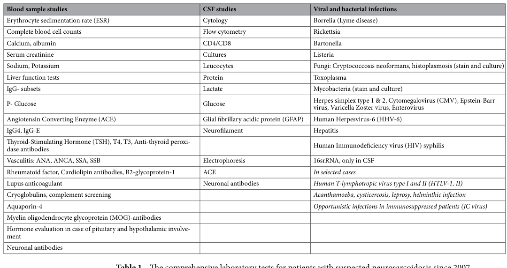

Neurosarcoidosis is nervous-system involvement by sarcoidosis, with granulomatous inflammation affecting the central or peripheral nervous system. Presentations are heterogeneous and may include cranial neuropathies, neuro-ophthalmic disease, meningeal or parenchymal CNS disease, myelopathy, and peripheral nerve involvement.
Ask a research question about Neurosarcoidosis. OpenScientist will conduct autonomous deep research using the Disorder Mechanisms Knowledge Base and PubMed literature (typically 10-30 minutes).
Do not include personal health information in your question. Questions and results are cached in your browser's local storage.
name: Neurosarcoidosis
creation_date: "2026-05-16T11:52:47Z"
updated_date: "2026-05-16T14:27:49Z"
category: Immune
datasets: []
description: >-
Neurosarcoidosis is nervous-system involvement by sarcoidosis, with
granulomatous inflammation affecting the central or peripheral nervous system.
Presentations are heterogeneous and may include cranial neuropathies,
neuro-ophthalmic disease, meningeal or parenchymal CNS disease, myelopathy, and
peripheral nerve involvement.
disease_term:
preferred_term: neurosarcoidosis
term:
id: MONDO:0045047
label: neurosarcoidosis
parents:
- Sarcoidosis
- Nervous System Disorder
- Neuroimmune Disease
prevalence:
- population: Northern Spain
percentage: 1.1 per 1,000,000 people annual incidence
evidence:
- reference: PMID:40564079
reference_title: Epidemiology, Clinical Features and Treatment of Neurosarcoidosis in Northern Spain.
supports: SUPPORT
evidence_source: HUMAN_CLINICAL
snippet: "The annual incidence of NS during the study period was 1.1 per 1,000,000 people."
explanation: A population-based Northern Spain cohort quantified annual neurosarcoidosis incidence.
- population: Olmsted County sarcoidosis cohort
percentage: 3% of patients with sarcoidosis
evidence:
- reference: PMID:28601860
reference_title: "Characteristics and Long-Term Outcome of Neurosarcoidosis: A Population-Based Study from 1976-2013."
supports: SUPPORT
evidence_source: HUMAN_CLINICAL
snippet: "Neurological involvement by sarcoidosis occurred in 11 patients (3% of all patients with sarcoidosis)."
explanation: This population-based sarcoidosis cohort estimates nervous-system involvement among sarcoidosis patients.
has_subtypes:
- name: Cranial Neuropathy
display_name: Cranial neuropathy-predominant neurosarcoidosis
description: >-
Neurosarcoidosis presenting predominantly with cranial nerve involvement,
often including facial, optic, abducens, trigeminal, or other cranial
neuropathies.
evidence:
- reference: PMID:40564079
reference_title: Epidemiology, Clinical Features and Treatment of Neurosarcoidosis in Northern Spain.
supports: SUPPORT
evidence_source: HUMAN_CLINICAL
snippet: >-
NS was subdivided into chronic headache (n = 11; 36.7%), cranial
neuropathy (n = 7; 24.1%), myelitis (n = 4; 13.8%), peripheral neuropathy
(n = 3; 10.3%), cranial neuropathy with chronic headache (n = 3; 10.3%)
and aseptic meningitis (n = 2; 6.9%).
explanation: The cohort explicitly separates a cranial neuropathy clinical subtype.
- name: Meningeal CNS
display_name: Meningeal and parenchymal CNS neurosarcoidosis
description: >-
CNS-predominant neurosarcoidosis with meningeal, parenchymal, headache,
seizure, hydrocephalus, or cognitive manifestations.
evidence:
- reference: PMID:32487903
reference_title: Sarcoidosis and the Nervous System.
supports: SUPPORT
evidence_source: HUMAN_CLINICAL
snippet: >-
central nervous system sarcoidosis occurs in well-defined presentations
that can be classified as cranial neuropathies, meningeal disease, brain
parenchymal (including pituitary-hypothalamic) disease, and spinal cord
disease.
explanation: This review classifies meningeal and parenchymal CNS presentations as major neurosarcoidosis forms.
- name: Myelitis
display_name: Spinal cord neurosarcoidosis
description: >-
Neurosarcoidosis with spinal cord inflammation, including myelitis and
enhancing intramedullary or leptomeningeal spinal cord lesions.
evidence:
- reference: PMID:32404428
reference_title: "Neurosarcoidosis: Longitudinal experience in a single-center, academic healthcare system."
supports: SUPPORT
evidence_source: HUMAN_CLINICAL
snippet: >-
Twenty patients (36%) had spinal cord involvement on MRI.
explanation: The longitudinal cohort identifies spinal cord involvement as a common disease compartment.
- name: Peripheral Neuropathy
display_name: Peripheral nervous system neurosarcoidosis
description: >-
Neurosarcoidosis involving peripheral nerves, including sensory or
sensorimotor neuropathy and mononeuropathies.
evidence:
- reference: PMID:32404428
reference_title: "Neurosarcoidosis: Longitudinal experience in a single-center, academic healthcare system."
supports: SUPPORT
evidence_source: HUMAN_CLINICAL
snippet: >-
Manifestations of PNS involvement included distal sensorimotor
polyneuropathy and mononeuropathies.
explanation: The cohort describes peripheral nerve involvement as part of the neurosarcoidosis spectrum.
- name: Hypothalamic-Pituitary
display_name: Hypothalamic-pituitary neurosarcoidosis
description: >-
Neurosarcoidosis involving the hypothalamus, pituitary stalk, or pituitary
gland, often with persistent endocrine dysfunction.
evidence:
- reference: PMID:22753675
reference_title: "Hypothalamo-pituitary sarcoidosis: a multicenter study of 24 patients."
supports: SUPPORT
evidence_source: HUMAN_CLINICAL
snippet: >-
All but two patients had anterior pituitary dysfunction, 12 patients
presented with diabetes insipidus.
explanation: The multicenter cohort identifies hypothalamic-pituitary involvement as a neurosarcoidosis localization.
definitions:
- name: Neurosarcoidosis Consortium diagnostic definition
definition_type: DIAGNOSTIC_CRITERIA
description: >-
Consensus criteria classify possible, probable, and definite central or
peripheral nervous system sarcoidosis after excluding infectious,
malignant, and other alternate causes; nonneural biopsy supports probable
neurosarcoidosis and neural tissue biopsy supports definite disease.
evidence:
- reference: PMID:30167654
reference_title: "Definition and Consensus Diagnostic Criteria for Neurosarcoidosis: From the Neurosarcoidosis Consortium Consensus Group."
supports: SUPPORT
evidence_source: HUMAN_CLINICAL
snippet: >-
The proposed consensus diagnostic criteria, which reflect current
knowledge, provide definitions for possible, probable, and definite
central and peripheral nervous system sarcoidosis.
explanation: The consensus statement defines the diagnostic categories for neurosarcoidosis.
- reference: PMID:30167654
reference_title: "Definition and Consensus Diagnostic Criteria for Neurosarcoidosis: From the Neurosarcoidosis Consortium Consensus Group."
supports: SUPPORT
evidence_source: HUMAN_CLINICAL
snippet: >-
Also emphasized is the need for biopsy, whenever feasible and advisable
according to clinical context and affected anatomy, of nonneural tissue to
document the presence of systemic sarcoidosis and support a diagnosis of
probable neurosarcoidosis or of neural tissue to support a diagnosis of
definite neurosarcoidosis.
explanation: The diagnostic definition distinguishes probable from definite disease by biopsy site.
pathophysiology:
- name: Antigen Presentation and Th1-Th17 Activation
description: >-
Sarcoidosis susceptibility is shaped by antigen presentation and enhanced
Th1/Th17 immune activation, producing cytokine signals that initiate and
expand granulomatous inflammation before tissue-specific nervous-system
injury occurs.
cell_types:
- preferred_term: T-helper 1 cell
term:
id: CL:0000545
label: T-helper 1 cell
- preferred_term: T-helper 17 cell
term:
id: CL:0000899
label: T-helper 17 cell
- preferred_term: macrophage
term:
id: CL:0000235
label: macrophage
biological_processes:
- preferred_term: antigen processing and presentation
modifier: INCREASED
term:
id: GO:0019882
label: antigen processing and presentation
- preferred_term: T cell activation
modifier: INCREASED
term:
id: GO:0042110
label: T cell activation
- preferred_term: cytokine production
modifier: INCREASED
term:
id: GO:0001816
label: cytokine production
- preferred_term: cell surface receptor signaling pathway via JAK-STAT
modifier: INCREASED
term:
id: GO:0007259
label: cell surface receptor signaling pathway via JAK-STAT
downstream:
- target: Nervous System Granulomatous Inflammation
description: >-
Activated Th1/Th17 and macrophage cytokine signaling promotes sarcoid
granuloma formation and expansion in susceptible tissues, including neural
compartments in neurosarcoidosis.
evidence:
- reference: PMID:41054684
reference_title: A Fulminant Case of Refractory Sarcoidosis Triggered by Infliximab-Neutralizing Antibodies.
supports: SUPPORT
evidence_source: HUMAN_CLINICAL
snippet: >-
An abnormal T regulatory response, in parallel with an enhanced Th1
response, results in the release of cytokines, including IL-2, IL-12,
IL-18, tumor necrosis factor-alpha (TNF-α), and interferon-gamma
(IFN-γ), which initiates granuloma formation.
explanation: >-
This review describes the Th1 cytokine axis that initiates sarcoid
granuloma formation upstream of tissue-specific involvement.
evidence:
- reference: PMID:41054684
reference_title: A Fulminant Case of Refractory Sarcoidosis Triggered by Infliximab-Neutralizing Antibodies.
supports: SUPPORT
evidence_source: HUMAN_CLINICAL
snippet: >-
Meanwhile, enhanced Th17 production stimulates the Janus kinase-signal
transducer and activator of transcription (JAK-STAT) signaling pathway,
ultimately leading to granuloma expansion.
explanation: >-
Supports Th17-associated JAK-STAT signaling as a granuloma-expansion
mechanism in sarcoidosis.
- name: Nervous System Granulomatous Inflammation
description: >-
Sarcoid granulomatous inflammation involves neural or meningeal tissue,
producing heterogeneous central and peripheral nervous system presentations.
locations:
- preferred_term: nervous system
term:
id: UBERON:0001016
label: nervous system
cell_types:
- preferred_term: macrophage
term:
id: CL:0000235
label: macrophage
- preferred_term: CD4-positive helper T cell
term:
id: CL:0000492
label: CD4-positive helper T cell
biological_processes:
- preferred_term: inflammatory response
modifier: INCREASED
term:
id: GO:0006954
label: inflammatory response
- preferred_term: adaptive immune response
modifier: INCREASED
term:
id: GO:0002250
label: adaptive immune response
- preferred_term: macrophage activation
modifier: INCREASED
term:
id: GO:0042116
label: macrophage activation
- preferred_term: granuloma formation
modifier: INCREASED
term:
id: GO:0002432
label: granuloma formation
downstream:
- target: Neurologic Dysfunction
description: >-
Granulomatous inflammation in neural, meningeal, or cranial-nerve sites
causes focal or diffuse neurologic manifestations.
evidence:
- reference: PMID:32404428
reference_title: "Neurosarcoidosis: Longitudinal experience in a single-center, academic healthcare system."
supports: SUPPORT
evidence_source: HUMAN_CLINICAL
snippet: >-
Neurologic manifestations commonly include cranial neuropathies, aseptic
meningitis, peripheral neuropathy, myelopathy, intraparenchymal mass
lesions, and hydrocephalus, all of which can lead to significant morbidity
and mortality.
explanation: The longitudinal cohort links neurosarcoidosis inflammation to focal neurologic manifestations.
evidence:
- reference: ORPHA:797
reference_title: Sarcoidosis
supports: SUPPORT
snippet: >-
A rare multisystemic, autoinflammatory disorder of unknown etiology
characterized by the formation of immune, non-caseating granulomas in any
organ(s), leading to variable clinical symptoms and severity.
explanation: Orphanet establishes the systemic sarcoid granulomatous process that can involve the nervous system.
- reference: PMID:30167654
reference_title: "Definition and Consensus Diagnostic Criteria for Neurosarcoidosis: From the Neurosarcoidosis Consortium Consensus Group."
supports: SUPPORT
evidence_source: HUMAN_CLINICAL
snippet: >-
Diverse disease presentations and lack of specificity of relevant
diagnostic tests contribute to diagnostic uncertainty.
explanation: The consensus statement emphasizes clinical heterogeneity from nervous-system involvement.
- name: Neurologic Dysfunction
description: >-
Downstream dysfunction includes cranial neuropathy, visual pathway
involvement, meningeal or parenchymal CNS disease, and peripheral nerve
manifestations.
locations:
- preferred_term: brain
term:
id: UBERON:0000955
label: brain
- preferred_term: spinal cord
term:
id: UBERON:0002240
label: spinal cord
- preferred_term: peripheral nervous system
term:
id: UBERON:0000010
label: peripheral nervous system
evidence:
- reference: PMID:30167654
reference_title: "Definition and Consensus Diagnostic Criteria for Neurosarcoidosis: From the Neurosarcoidosis Consortium Consensus Group."
supports: SUPPORT
evidence_source: HUMAN_CLINICAL
snippet: >-
The work of this collaboration included a review of the manifestations of
neurosarcoidosis and the establishment of an approach to the diagnosis of
this disorder.
explanation: The consensus criteria are built around the diverse manifestations of neurosarcoidosis.
phenotypes:
- name: Headache
subtype: Meningeal CNS
category: Neurologic
frequency: FREQUENT
phenotype_term:
preferred_term: Headache
term:
id: HP:0002315
label: Headache
evidence:
- reference: PMID:40564079
reference_title: Epidemiology, Clinical Features and Treatment of Neurosarcoidosis in Northern Spain.
supports: SUPPORT
evidence_source: HUMAN_CLINICAL
snippet: >-
NS was subdivided into chronic headache (n = 11; 36.7%), cranial
neuropathy (n = 7; 24.1%), myelitis (n = 4; 13.8%), peripheral neuropathy
(n = 3; 10.3%), cranial neuropathy with chronic headache (n = 3; 10.3%)
and aseptic meningitis (n = 2; 6.9%).
explanation: Chronic headache met the frequent range in this cohort.
- name: Cranial Neuropathy
subtype: Cranial Neuropathy
category: Neurologic
frequency: OCCASIONAL
phenotype_term:
preferred_term: Cranial neuropathy
term:
id: HP:0006824
label: Cranial nerve paralysis
evidence:
- reference: PMID:40564079
reference_title: Epidemiology, Clinical Features and Treatment of Neurosarcoidosis in Northern Spain.
supports: SUPPORT
evidence_source: HUMAN_CLINICAL
snippet: >-
NS was subdivided into chronic headache (n = 11; 36.7%), cranial
neuropathy (n = 7; 24.1%), myelitis (n = 4; 13.8%), peripheral neuropathy
(n = 3; 10.3%), cranial neuropathy with chronic headache (n = 3; 10.3%)
and aseptic meningitis (n = 2; 6.9%).
explanation: Cranial neuropathy was reported in the occasional range as a subtype-defining presentation.
- name: Myelitis
subtype: Myelitis
category: Neurologic
frequency: OCCASIONAL
phenotype_term:
preferred_term: Myelitis
term:
id: HP:0012486
label: Myelitis
evidence:
- reference: PMID:40564079
reference_title: Epidemiology, Clinical Features and Treatment of Neurosarcoidosis in Northern Spain.
supports: SUPPORT
evidence_source: HUMAN_CLINICAL
snippet: >-
NS was subdivided into chronic headache (n = 11; 36.7%), cranial
neuropathy (n = 7; 24.1%), myelitis (n = 4; 13.8%), peripheral neuropathy
(n = 3; 10.3%), cranial neuropathy with chronic headache (n = 3; 10.3%)
and aseptic meningitis (n = 2; 6.9%).
explanation: Myelitis was observed in 13.8% of this neurosarcoidosis cohort.
- name: Peripheral Neuropathy
subtype: Peripheral Neuropathy
category: Neurologic
frequency: OCCASIONAL
phenotype_term:
preferred_term: Peripheral neuropathy
term:
id: HP:0009830
label: Peripheral neuropathy
evidence:
- reference: PMID:40564079
reference_title: Epidemiology, Clinical Features and Treatment of Neurosarcoidosis in Northern Spain.
supports: SUPPORT
evidence_source: HUMAN_CLINICAL
snippet: >-
NS was subdivided into chronic headache (n = 11; 36.7%), cranial
neuropathy (n = 7; 24.1%), myelitis (n = 4; 13.8%), peripheral neuropathy
(n = 3; 10.3%), cranial neuropathy with chronic headache (n = 3; 10.3%)
and aseptic meningitis (n = 2; 6.9%).
explanation: Peripheral neuropathy was reported in 10.3% of patients in this cohort.
- name: Small Fiber Neuropathy
subtype: Peripheral Neuropathy
category: Neurologic
frequency: FREQUENT
phenotype_term:
preferred_term: Small fiber neuropathy
term:
id: HP:0009830
label: Peripheral neuropathy
notes: >-
HPO does not provide a pre-coordinated small fiber neuropathy term in the
local ontology release; the more specific clinical label is retained in
preferred_term while mapping to peripheral neuropathy.
evidence:
- reference: PMID:41218636
reference_title: Small Fiber Neuropathy in Sarcoidosis.
supports: SUPPORT
evidence_source: HUMAN_CLINICAL
snippet: >-
An important cause of pain in patients with sarcoidosis is small fiber
neuropathy (SFN), with an estimated prevalence of 33 to 86%.
explanation: >-
This review supports small fiber neuropathy as a frequent
sarcoidosis-associated peripheral nerve manifestation.
- name: Meningitis
subtype: Meningeal CNS
category: Neurologic
frequency: OCCASIONAL
phenotype_term:
preferred_term: Meningitis
term:
id: HP:0001287
label: Meningitis
evidence:
- reference: PMID:28601860
reference_title: "Characteristics and Long-Term Outcome of Neurosarcoidosis: A Population-Based Study from 1976-2013."
supports: SUPPORT
evidence_source: HUMAN_CLINICAL
snippet: >-
Cranial neuropathy was the most common type of neurological disease (5
patients; 45%) followed by peripheral neuropathy (3 patients; 27%), and
meningitis (3 patients; 27%).
explanation: Meningitis was one of the most common neurologic disease types in this population-based cohort.
- name: Hydrocephalus
subtype: Meningeal CNS
category: Neurologic
phenotype_term:
preferred_term: Hydrocephalus
term:
id: HP:0000238
label: Hydrocephalus
evidence:
- reference: PMID:32404428
reference_title: "Neurosarcoidosis: Longitudinal experience in a single-center, academic healthcare system."
supports: SUPPORT
evidence_source: HUMAN_CLINICAL
snippet: >-
Neurologic manifestations commonly include cranial neuropathies, aseptic
meningitis, peripheral neuropathy, myelopathy, intraparenchymal mass
lesions, and hydrocephalus, all of which can lead to significant morbidity
and mortality.
explanation: The longitudinal study lists hydrocephalus among common neurologic manifestations.
- name: Optic Neuropathy
subtype: Cranial Neuropathy
category: Ophthalmologic
phenotype_term:
preferred_term: Optic neuropathy
term:
id: HP:0001138
label: Optic neuropathy
evidence:
- reference: PMID:33110001
reference_title: Neuro-Ophthalmic Manifestations of Sarcoidosis.
supports: SUPPORT
evidence_source: HUMAN_CLINICAL
snippet: >-
Neuro-ophthalmic findings included optic neuropathy in 11 (50%);
proptosis/orbital inflammation in 5 (23%); abducens palsy in 5 (23%);
trochlear palsy, trigeminal distribution numbness, and bitemporal
hemianopia in 2 each (9%); and oculomotor palsy, facial palsy, optic
perineuritis, dorsal midbrain syndrome, central vestibular nystagmus, and
papilledema in 1 each (5%).
explanation: The case series directly lists optic neuropathy among neuro-ophthalmic manifestations.
- name: Abducens Palsy
subtype: Cranial Neuropathy
category: Neurologic
phenotype_term:
preferred_term: Abducens palsy
term:
id: HP:0006897
label: Abducens palsy
evidence:
- reference: PMID:33110001
reference_title: Neuro-Ophthalmic Manifestations of Sarcoidosis.
supports: SUPPORT
evidence_source: HUMAN_CLINICAL
snippet: >-
Neuro-ophthalmic findings included optic neuropathy in 11 (50%);
proptosis/orbital inflammation in 5 (23%); abducens palsy in 5 (23%);
trochlear palsy, trigeminal distribution numbness, and bitemporal
hemianopia in 2 each (9%); and oculomotor palsy, facial palsy, optic
perineuritis, dorsal midbrain syndrome, central vestibular nystagmus, and
papilledema in 1 each (5%).
explanation: The neuro-ophthalmology cohort reports abducens palsy as a sarcoidosis-associated manifestation.
- name: Facial Palsy
subtype: Cranial Neuropathy
category: Neurologic
phenotype_term:
preferred_term: Facial palsy
term:
id: HP:0010628
label: Facial palsy
evidence:
- reference: PMID:33110001
reference_title: Neuro-Ophthalmic Manifestations of Sarcoidosis.
supports: SUPPORT
evidence_source: HUMAN_CLINICAL
snippet: >-
Neuro-ophthalmic findings included optic neuropathy in 11 (50%);
proptosis/orbital inflammation in 5 (23%); abducens palsy in 5 (23%);
trochlear palsy, trigeminal distribution numbness, and bitemporal
hemianopia in 2 each (9%); and oculomotor palsy, facial palsy, optic
perineuritis, dorsal midbrain syndrome, central vestibular nystagmus, and
papilledema in 1 each (5%).
explanation: The series lists facial palsy among neuro-ophthalmic manifestations.
- name: Muscle Weakness
subtype: Meningeal CNS
category: Neurologic
frequency: FREQUENT
phenotype_term:
preferred_term: Muscle weakness
term:
id: HP:0001324
label: Muscle weakness
evidence:
- reference: DOI:10.1038/s41598-023-33631-z
reference_title: A comprehensive diagnostic approach in suspected neurosarcoidosis
supports: SUPPORT
evidence_source: HUMAN_CLINICAL
snippet: >-
Cranial neuropathies (38%), motor deficit (32%), headache (16%), and
pituitary dysfunction (12%) were the most common presenting features.
explanation: Motor deficit was a frequent presenting feature in this diagnostic cohort.
- name: Seizure
subtype: Meningeal CNS
category: Neurologic
frequency: OCCASIONAL
phenotype_term:
preferred_term: Seizure
term:
id: HP:0001250
label: Seizure
evidence:
- reference: DOI:10.1002/brb3.3443
reference_title: "Neurosarcoidosis: Clinical, biological, and MRI presentation of central nervous system disease in a national multicenter cohort"
supports: SUPPORT
evidence_source: HUMAN_CLINICAL
snippet: >-
NS was the initial presentation in 78% of patients, with cranial nerve
involvement (36%), medullary symptoms (23%), and seizures (21%).
explanation: Seizures were an occasional initial manifestation in the national multicenter cohort.
- name: Cognitive Impairment
subtype: Meningeal CNS
category: Cognitive
frequency: OCCASIONAL
phenotype_term:
preferred_term: Cognitive impairment
term:
id: HP:0100543
label: Cognitive impairment
evidence:
- reference: PMID:40769406
reference_title: "Cognitive impairment in systemic autoimmune and inflammatory diseases: A narrative review focused on ANCA-associated vasculitis, sarcoidosis, Sjögren's syndrome, systemic sclerosis, and Behçet's disease."
supports: SUPPORT
evidence_source: HUMAN_CLINICAL
snippet: >-
Reported prevalence varies widely: ∼30 % in AAV, 0-35 % in sarcoidosis,
10-80 % in pSS, 8-65 % in SSc, and 30-100 % in BD.
explanation: >-
This review supports cognitive impairment as a sarcoidosis-associated
cognitive phenotype in the occasional frequency range.
- name: Hypopituitarism
subtype: Hypothalamic-Pituitary
category: Endocrine
phenotype_term:
preferred_term: Hypopituitarism
term:
id: HP:0040075
label: Hypopituitarism
evidence:
- reference: PMID:22753675
reference_title: "Hypothalamo-pituitary sarcoidosis: a multicenter study of 24 patients."
supports: SUPPORT
evidence_source: HUMAN_CLINICAL
snippet: >-
All but two patients had anterior pituitary dysfunction, 12 patients
presented with diabetes insipidus.
explanation: Anterior pituitary dysfunction in hypothalamic-pituitary sarcoidosis maps to hypopituitarism.
- name: Diabetes Insipidus
subtype: Hypothalamic-Pituitary
category: Endocrine
phenotype_term:
preferred_term: Diabetes insipidus
term:
id: HP:0000873
label: Diabetes insipidus
evidence:
- reference: PMID:22753675
reference_title: "Hypothalamo-pituitary sarcoidosis: a multicenter study of 24 patients."
supports: SUPPORT
evidence_source: HUMAN_CLINICAL
snippet: >-
All but two patients had anterior pituitary dysfunction, 12 patients
presented with diabetes insipidus.
explanation: Diabetes insipidus was a common endocrine presentation in hypothalamic-pituitary sarcoidosis.
histopathology:
- name: Non-caseating granulomatous inflammation
description: >-
Non-caseating granulomatous inflammation in neural tissue supports definite
neurosarcoidosis, while extraneural biopsy evidence of systemic sarcoidosis
supports probable neurosarcoidosis in the appropriate clinical context.
diagnostic: true
context: Neural or extraneural biopsy
evidence:
- reference: ORPHA:797
reference_title: Sarcoidosis
supports: SUPPORT
snippet: >-
A rare multisystemic, autoinflammatory disorder of unknown etiology
characterized by the formation of immune, non-caseating granulomas in any
organ(s), leading to variable clinical symptoms and severity.
explanation: Orphanet identifies non-caseating granulomas as the core sarcoidosis histopathologic process.
- reference: PMID:30167654
reference_title: "Definition and Consensus Diagnostic Criteria for Neurosarcoidosis: From the Neurosarcoidosis Consortium Consensus Group."
supports: SUPPORT
evidence_source: HUMAN_CLINICAL
snippet: >-
Also emphasized is the need for biopsy, whenever feasible and advisable
according to clinical context and affected anatomy, of nonneural tissue to
document the presence of systemic sarcoidosis and support a diagnosis of
probable neurosarcoidosis or of neural tissue to support a diagnosis of
definite neurosarcoidosis.
explanation: >-
The consensus criteria tie probable and definite neurosarcoidosis
classification to biopsy confirmation of sarcoidosis.
diagnosis:
- name: MRI assessment
diagnosis_term:
preferred_term: magnetic resonance imaging
term:
id: NCIT:C16809
label: Magnetic Resonance Imaging
evidence:
- reference: PMID:33110001
reference_title: Neuro-Ophthalmic Manifestations of Sarcoidosis.
supports: SUPPORT
evidence_source: HUMAN_CLINICAL
snippet: >-
MRI usually is abnormal, although findings may be nonspecific.
explanation: MRI is a common diagnostic assessment, while not pathognomonic.
- name: Biopsy confirmation
diagnosis_term:
preferred_term: biopsy
term:
id: NCIT:C15189
label: Biopsy Procedure
evidence:
- reference: PMID:30167654
reference_title: "Definition and Consensus Diagnostic Criteria for Neurosarcoidosis: From the Neurosarcoidosis Consortium Consensus Group."
supports: SUPPORT
evidence_source: HUMAN_CLINICAL
snippet: >-
Also emphasized is the need for biopsy, whenever feasible and advisable
according to clinical context and affected anatomy, of nonneural tissue to
document the presence of systemic sarcoidosis and support a diagnosis of
probable neurosarcoidosis or of neural tissue to support a diagnosis of
definite neurosarcoidosis.
explanation: Biopsy site determines probable versus definite neurosarcoidosis classification.
- name: CSF analysis
diagnosis_term:
preferred_term: cerebrospinal fluid analysis
term:
id: NCIT:C173272
label: CSF Analysis
evidence:
- reference: PMID:32404428
reference_title: "Neurosarcoidosis: Longitudinal experience in a single-center, academic healthcare system."
supports: SUPPORT
evidence_source: HUMAN_CLINICAL
snippet: >-
CSF analysis was performed on 29 patients, but chart documentation of
these laboratory values was incomplete.
explanation: CSF analysis is a common inflammatory diagnostic assessment in neurosarcoidosis cohorts.
- name: FDG-PET/CT assessment
diagnosis_term:
preferred_term: FDG-positron emission tomography
term:
id: NCIT:C103400
label: FDG-Positron Emission Tomography
evidence:
- reference: DOI:10.1038/s41598-023-33631-z
reference_title: A comprehensive diagnostic approach in suspected neurosarcoidosis
supports: SUPPORT
evidence_source: HUMAN_CLINICAL
snippet: >-
FDG-PET/CT was performed in 22 patients (33%) and confirmed systemic
sarcoidosis in 11.
explanation: FDG-PET/CT can help identify systemic sarcoidosis and potential extraneural biopsy targets.
biochemical:
- name: CSF Pleocytosis
presence: INCREASED
context: >-
CSF pleocytosis supports CNS inflammation in neurosarcoidosis, especially in
meningeal, spinal cord, mass-lesion, and some cranial neuropathy
presentations.
evidence:
- reference: PMID:28601860
reference_title: "Characteristics and Long-Term Outcome of Neurosarcoidosis: A Population-Based Study from 1976-2013."
supports: SUPPORT
evidence_source: HUMAN_CLINICAL
snippet: >-
CSF pleocytosis and high CSF protein level were also observed in the
patient with intra-medullary spinal cord sarcoidosis, the patient with
intra-cranial mass lesion and some patients with cranial neuropathy, but
not in patients with peripheral neuropathy.
explanation: The cohort links CSF pleocytosis to CNS neurosarcoidosis compartments.
- name: Elevated CSF Protein
presence: INCREASED
context: >-
Elevated CSF protein is a common supportive inflammatory finding, but it is
not specific and must be interpreted with imaging, biopsy, and exclusion of
mimics.
evidence:
- reference: PMID:32404428
reference_title: "Neurosarcoidosis: Longitudinal experience in a single-center, academic healthcare system."
supports: SUPPORT
evidence_source: HUMAN_CLINICAL
snippet: >-
An elevated CSF protein level (>50 mg/dL) was present in 16 of 29 patients
(55%), and oligoclonal bands were present in 6 of 21 patients (29%).
explanation: The longitudinal cohort quantifies elevated CSF protein in neurosarcoidosis patients.
- name: Elevated Soluble Interleukin-2 Receptor
presence: INCREASED
context: >-
Serum or CSF soluble interleukin-2 receptor may support inflammatory
neurosarcoidosis evaluation, especially when differentiating from multiple
sclerosis or other mimics.
evidence:
- reference: DOI:10.3389/fneur.2023.1135392
reference_title: Differentiating neurosarcoidosis from multiple sclerosis using combined analysis of basic CSF parameters and MRZ reaction
supports: SUPPORT
evidence_source: HUMAN_CLINICAL
snippet: >-
Compared to MS, patients with neurosarcoidosis showed more frequently an
increased Qalb and CSF lactate levels as well as increased serum and CSF
levels of sIL-2R, but a lower frequency of intrathecal IgG synthesis and
positive MRZ reaction.
explanation: This cohort supports increased soluble IL-2 receptor as part of the inflammatory biomarker profile.
- name: Angiotensin-Converting Enzyme
presence: INCREASED
context: >-
Serum ACE is a traditional supportive sarcoidosis biomarker and CSF ACE has
limited sensitivity but high specificity in selected probable CNS
neurosarcoidosis cohorts.
evidence:
- reference: PMID:32354749
reference_title: "Distinguishing neurosarcoidosis from multiple sclerosis based on CSF analysis: A retrospective study."
supports: SUPPORT
evidence_source: HUMAN_CLINICAL
snippet: >-
Serum ACE levels were elevated in 51% of patients but in only 14% of those
with isolated neurosarcoidosis.
explanation: >-
This neurosarcoidosis cohort supports serum ACE elevation as a traditional
but imperfect biomarker.
- reference: PMID:12405488
reference_title: CSF-ACE activity in probable CNS neurosarcoidosis.
supports: SUPPORT
evidence_source: HUMAN_CLINICAL
snippet: >-
At this value, the sensitivity and specificity of CSF-ACE activity was 55%
and 94%, respectively.
explanation: >-
This study supports CSF ACE as a high-specificity, limited-sensitivity
biochemical marker in probable CNS neurosarcoidosis.
- name: Elevated Neurofilament Light Chain
presence: INCREASED
context: >-
Elevated cerebrospinal fluid or plasma neurofilament light chain reflects
axonal injury and correlates with inflammatory MRI activity in
neurosarcoidosis.
evidence:
- reference: PMID:33672795
reference_title: Elevated Neurofilament Light Chain in Cerebrospinal Fluid and Plasma Reflect Inflammatory MRI Activity in Neurosarcoidosis.
supports: SUPPORT
evidence_source: HUMAN_CLINICAL
snippet: >-
NFL levels in cerebrospinal fluid and plasma are significantly higher in
neurosarcoidosis patients compared to extra-neurologic patients and healthy
controls, and the levels correlate to the extent of inflammation on MRI.
explanation: This study supports neurofilament light chain as a biomarker of neuroaxonal injury and inflammatory activity.
genetic:
- name: HLA-DRB1
gene_term:
preferred_term: HLA-DRB1
term:
id: hgnc:4948
label: HLA-DRB1
association: HLA class II alleles modify sarcoidosis clinical course and antigen presentation.
relationship_type: MODIFIER
variant_origin: GERMLINE
evidence:
- reference: PMID:27662826
reference_title: "Associations between sarcoidosis clinical course and ANXA11 rs1049550 C/T, BTNL2 rs2076530 G/A, and HLA class I and II alleles."
supports: SUPPORT
evidence_source: HUMAN_CLINICAL
snippet: >-
Only the HLA DRB1*03 allele was significantly associated with disease
resolution (21.2% vs 4.9% for chronic disease; RR = 0.35; P < .01 after
Bonferroni correction).
explanation: >-
Supports HLA-DRB1 allelic variation as a genetic modifier of sarcoidosis
clinical course.
- name: BTNL2
gene_term:
preferred_term: BTNL2
term:
id: hgnc:1142
label: BTNL2
association: Sarcoidosis susceptibility locus affecting T cell co-stimulation.
relationship_type: SUSCEPTIBILITY
variant_origin: GERMLINE
evidence:
- reference: PMID:26164297
reference_title: "Granuloma genes in sarcoidosis: what is new?"
supports: SUPPORT
evidence_source: HUMAN_CLINICAL
snippet: >-
Genome-wide genetic screening approaches revealed a number of novel
susceptibility factors for sarcoidosis, some of which are very likely to
affect granuloma formation. A splicing variant in the BTNL2 gene had first
been reported with regards to sarcoidosis by Valentonyte et al. in a
German study sample 33.
explanation: >-
Supports BTNL2 as a sarcoidosis susceptibility gene connected to granuloma
biology.
- name: ANXA11
gene_term:
preferred_term: ANXA11
term:
id: hgnc:535
label: ANXA11
association: Sarcoidosis susceptibility locus linked to granuloma stability and apoptosis regulation.
relationship_type: SUSCEPTIBILITY
variant_origin: GERMLINE
evidence:
- reference: PMID:26164297
reference_title: "Granuloma genes in sarcoidosis: what is new?"
supports: SUPPORT
evidence_source: HUMAN_CLINICAL
snippet: >-
Based on a genome-wide association study (GWAS), variants in the ANXA11
gene which codes for Annexin 11 were found to be associated with
sarcoidosis 44 and confirmed in independent populations of German, Czech,
Portuguese and European and African American origin 37, 45-48.
explanation: >-
Supports ANXA11 as a replicated sarcoidosis susceptibility locus.
- name: NOD2
gene_term:
preferred_term: NOD2
term:
id: hgnc:5331
label: NOD2
association: Monogenic sarcoidosis-spectrum granulomatous disease gene in Blau syndrome.
relationship_type: CAUSATIVE
variant_origin: GERMLINE
notes: >-
NOD2 is not a typical adult neurosarcoidosis susceptibility locus, but
NOD2-related Blau syndrome is an early-onset sarcoidosis-spectrum
autoinflammatory granulomatosis relevant to differential genetic context.
evidence:
- reference: PMID:32618442
reference_title: "Blau Syndrome: NOD2-related systemic autoinflammatory granulomatosis."
supports: SUPPORT
evidence_source: HUMAN_CLINICAL
snippet: >-
Heterozygous mutations in nucleotide-binding oligomerization domain 2
(NOD2) were identified as the cause of Blau Syndrome onset.
explanation: >-
Supports NOD2 as the causative gene for a sarcoidosis-spectrum
autoinflammatory granulomatosis.
progression:
- phase: Treatment response and relapse
notes: >-
Neurosarcoidosis often initially responds to high-dose glucocorticoids, but
relapse can occur during dose reduction or discontinuation, requiring
steroid-sparing immunosuppression or biologic therapy.
evidence:
- reference: PMID:28601860
reference_title: "Characteristics and Long-Term Outcome of Neurosarcoidosis: A Population-Based Study from 1976-2013."
supports: SUPPORT
evidence_source: HUMAN_CLINICAL
snippet: >-
Neurosarcoidosis manifestations generally responded well to high-dose
glucocorticoids in the majority of patients, but relapse was common.
explanation: This population-based cohort describes the response-relapse pattern.
treatments:
- name: High-dose glucocorticoids
description: >-
High-dose glucocorticoids such as prednisone or intravenous
methylprednisolone are commonly used as initial therapy, but long-term
toxicity and relapse during taper often necessitate steroid-sparing agents.
treatment_term:
preferred_term: Pharmacotherapy
term:
id: NCIT:C15986
label: Pharmacotherapy
therapeutic_agent:
- preferred_term: corticosteroid
term:
id: NCIT:C211
label: Therapeutic Corticosteroid
- preferred_term: prednisone
term:
id: CHEBI:8382
label: prednisone
target_mechanisms:
- target: Nervous System Granulomatous Inflammation
treatment_effect: INHIBITS
description: Glucocorticoids suppress the granulomatous inflammatory process.
evidence:
- reference: PMID:28601860
reference_title: "Characteristics and Long-Term Outcome of Neurosarcoidosis: A Population-Based Study from 1976-2013."
supports: SUPPORT
evidence_source: HUMAN_CLINICAL
snippet: >-
Almost all patients had a good response to initial treatment with high-dose
glucocorticoids, often initially 1 gram methylprednisolone daily for 3 to
5 days, or prednisone, 1 mg/kg body weight as initial dose.
explanation: Clinical response to high-dose glucocorticoids supports inhibition of active inflammatory disease.
evidence:
- reference: PMID:28601860
reference_title: "Characteristics and Long-Term Outcome of Neurosarcoidosis: A Population-Based Study from 1976-2013."
supports: SUPPORT
evidence_source: HUMAN_CLINICAL
snippet: >-
All patients received high-dose glucocorticoids as initial treatment and
almost all responded to this therapy.
explanation: Supports glucocorticoids as common initial treatment with frequent initial response.
- name: Conventional steroid-sparing immunosuppression
description: >-
Methotrexate, azathioprine, mycophenolate mofetil, and related
immunosuppressants are used when glucocorticoid taper fails or prolonged
steroid exposure is undesirable.
treatment_term:
preferred_term: Pharmacotherapy
term:
id: NCIT:C15986
label: Pharmacotherapy
therapeutic_agent:
- preferred_term: methotrexate
term:
id: CHEBI:44185
label: methotrexate
- preferred_term: azathioprine
term:
id: CHEBI:2948
label: azathioprine
- preferred_term: immunosuppressant
term:
id: NCIT:C574
label: Immunosuppressant
target_mechanisms:
- target: Nervous System Granulomatous Inflammation
treatment_effect: INHIBITS
description: Steroid-sparing immunosuppressants reduce adaptive immune activity sustaining granulomatous inflammation.
evidence:
- reference: PMID:28601860
reference_title: "Characteristics and Long-Term Outcome of Neurosarcoidosis: A Population-Based Study from 1976-2013."
supports: SUPPORT
evidence_source: HUMAN_CLINICAL
snippet: >-
Several disease-modifying anti-rheumatic disease drugs (DMARDs), including
methotrexate, mycophenolate mofetil, hydroxychloroquine and azathioprine,
were used in this cohort as glucocorticoid-sparing agents after failure of
glucocorticoids taper.
explanation: Steroid-sparing DMARD use supports immunosuppression as a treatment mechanism.
evidence:
- reference: PMID:28601860
reference_title: "Characteristics and Long-Term Outcome of Neurosarcoidosis: A Population-Based Study from 1976-2013."
supports: SUPPORT
evidence_source: HUMAN_CLINICAL
snippet: >-
Several disease-modifying anti-rheumatic disease drugs (DMARDs), including
methotrexate, mycophenolate mofetil, hydroxychloroquine and azathioprine,
were used in this cohort as glucocorticoid-sparing agents after failure of
glucocorticoids taper.
explanation: The cohort documents conventional immunosuppressants used as steroid-sparing agents.
- name: Infliximab
description: >-
TNF-alpha blockade with infliximab is used for refractory or severe
neurosarcoidosis and has cohort evidence for stabilization or improvement.
treatment_term:
preferred_term: Pharmacotherapy
term:
id: NCIT:C15986
label: Pharmacotherapy
therapeutic_agent:
- preferred_term: infliximab
term:
id: NCIT:C1789
label: Infliximab
target_mechanisms:
- target: Nervous System Granulomatous Inflammation
treatment_effect: INHIBITS
description: TNF-alpha blockade targets a cytokine axis required for granulomatous inflammation.
evidence:
- reference: PMID:32404428
reference_title: "Neurosarcoidosis: Longitudinal experience in a single-center, academic healthcare system."
supports: SUPPORT
evidence_source: HUMAN_CLINICAL
snippet: >-
This robust response is because of TNFα's critical role in the granuloma
formation and supported by the high recurrence rate seen after stopping
the medication.
explanation: The cohort explicitly relates infliximab response to TNF-alpha's role in granuloma biology.
evidence:
- reference: PMID:32404428
reference_title: "Neurosarcoidosis: Longitudinal experience in a single-center, academic healthcare system."
supports: SUPPORT
evidence_source: HUMAN_CLINICAL
snippet: >-
Infliximab was the most effective therapy, with 87% of patients remaining
stable or improving on infliximab.
explanation: The longitudinal cohort supports infliximab effectiveness in neurosarcoidosis.
- reference: PMID:28260120
reference_title: Long-term outcomes of refractory neurosarcoidosis treated with infliximab.
supports: SUPPORT
evidence_source: HUMAN_CLINICAL
snippet: >-
At 6 months after initiation of infliximab, six patients obtained complete
remission (33%), ten attained partial remission (56%), and two had stable
disease (11%).
explanation: A refractory neurosarcoidosis cohort reports remission or stability after infliximab.
- reference: DOI:10.1002/acn3.51968
reference_title: "Infliximab in neurosarcoidosis: a systematic review and meta-analysis"
supports: SUPPORT
evidence_source: HUMAN_CLINICAL
snippet: >-
Infliximab demonstrated potential improvement in clinical outcomes for
patients with refractory neurosarcoidosis and showed potential for reducing
the dosage of concurrent corticosteroids.
explanation: The systematic review provides pooled outcome support for infliximab in neurosarcoidosis.
- name: Adalimumab
description: >-
Adalimumab is an alternative TNF-alpha inhibitor with limited case-series
evidence for clinical and radiographic response in neurosarcoidosis.
treatment_term:
preferred_term: Pharmacotherapy
term:
id: NCIT:C15986
label: Pharmacotherapy
therapeutic_agent:
- preferred_term: adalimumab
term:
id: NCIT:C65216
label: Adalimumab
target_mechanisms:
- target: Nervous System Granulomatous Inflammation
treatment_effect: INHIBITS
description: TNF-alpha blockade targets granulomatous inflammatory signaling.
evidence:
- reference: PMID:38640580
reference_title: "Adalimumab as treatment for neurosarcoidosis: A case series."
supports: SUPPORT
evidence_source: HUMAN_CLINICAL
snippet: >-
We discovered ten neurosarcoidosis patients who were on an alternative
TNA-alpha inhibitor, adalimumab.
explanation: The case series identifies adalimumab as an alternative TNF-alpha inhibitor used in neurosarcoidosis.
evidence:
- reference: PMID:38640580
reference_title: "Adalimumab as treatment for neurosarcoidosis: A case series."
supports: SUPPORT
evidence_source: HUMAN_CLINICAL
snippet: >-
Eight patients had a positive response clinically and radiographically to
adalimumab.
explanation: A small case series reports clinical and radiographic response to adalimumab.
clinical_trials:
- name: NCT02920710
phase: PHASE_IV
status: WITHDRAWN
description: ACTHAR gel study for severe central nervous system sarcoidosis.
evidence:
- reference: clinicaltrials:NCT02920710
reference_title: ACTHAR Therapy for Central Nervous System Sarcoidosis
supports: SUPPORT
snippet: >-
This study aims to provide evidence for effectiveness of ACTHAR gel in CNS
sarcoidosis, and provide information about its safety and tolerability
explanation: ClinicalTrials.gov describes an interventional ACTHAR study specific to CNS sarcoidosis.
- name: NCT04911348
status: UNKNOWN
description: Multicenter retrospective study of initial presentation and disease course in neurosarcoidosis.
evidence:
- reference: clinicaltrials:NCT04911348
reference_title: "Neurosarcoidosis : Initial Presentation and Disease Course, a Multicenter Retrospective Study"
supports: SUPPORT
snippet: >-
Using retrospective data from patients diagnosed with neurosarcoidosis in
three French referral centers for neuro-inflammation, the investigators aim
to determine patterns of disease course, according to the initial
presentation and the treatments used.
explanation: The trial registry describes a neurosarcoidosis-specific disease-course study.
references:
- reference: DOI:10.1001/jamaneurol.2018.2295
title: Definition and Consensus Diagnostic Criteria for Neurosarcoidosis
found_in:
- Neurosarcoidosis-deep-research-falcon.md
- reference: DOI:10.1002/acn3.51968
title: 'Infliximab in neurosarcoidosis: a systematic review and meta‐analysis'
found_in:
- Neurosarcoidosis-deep-research-falcon.md
findings:
- statement: To evaluate the clinical outcomes and relapse rates in neurosarcoidosis patients administered infliximab.MethodsA systematic review was conducted using the MEDLINE, EMBASE, SCOPUS, and Cochrane Library databases.
supporting_text: To evaluate the clinical outcomes and relapse rates in neurosarcoidosis patients administered infliximab.MethodsA systematic review was conducted using the MEDLINE, EMBASE, SCOPUS, and Cochrane Library databases.
evidence:
- reference: DOI:10.1002/acn3.51968
reference_title: 'Infliximab in neurosarcoidosis: a systematic review and meta‐analysis'
supports: SUPPORT
evidence_source: HUMAN_CLINICAL
snippet: To evaluate the clinical outcomes and relapse rates in neurosarcoidosis patients administered infliximab.MethodsA systematic review was conducted using the MEDLINE, EMBASE, SCOPUS, and Cochrane Library databases.
explanation: Deep research cited this publication as relevant literature for Neurosarcoidosis.
- reference: DOI:10.1002/brb3.3443
title: 'Neurosarcoidosis: Clinical, biological, and MRI presentation of central nervous system disease in a national multicenter cohort'
found_in:
- Neurosarcoidosis-deep-research-falcon.md
findings:
- statement: Neurosarcoidosis (NS) is a systemic inflammatory granulomatous disease affecting of patients with sarcoidosis.
supporting_text: Neurosarcoidosis (NS) is a systemic inflammatory granulomatous disease affecting of patients with sarcoidosis.
evidence:
- reference: DOI:10.1002/brb3.3443
reference_title: 'Neurosarcoidosis: Clinical, biological, and MRI presentation of central nervous system disease in a national multicenter cohort'
supports: SUPPORT
evidence_source: HUMAN_CLINICAL
snippet: Neurosarcoidosis (NS) is a systemic inflammatory granulomatous disease affecting of patients with sarcoidosis.
explanation: Deep research cited this publication as relevant literature for Neurosarcoidosis.
- reference: DOI:10.1038/s41598-021-92967-6
title: Clinical characterization and outcomes of 85 patients with neurosarcoidosis
found_in:
- Neurosarcoidosis-deep-research-falcon.md
- Neurosarcoidosis-deep-research-openscientist.md
findings:
- statement: To analyze the frequency and clinical phenotype of neurosarcoidosis (NS) in one of the largest nationwide cohorts of patients with sarcoidosis reported from southern Europe.
supporting_text: To analyze the frequency and clinical phenotype of neurosarcoidosis (NS) in one of the largest nationwide cohorts of patients with sarcoidosis reported from southern Europe.
evidence:
- reference: DOI:10.1038/s41598-021-92967-6
reference_title: Clinical characterization and outcomes of 85 patients with neurosarcoidosis
supports: SUPPORT
evidence_source: HUMAN_CLINICAL
snippet: To analyze the frequency and clinical phenotype of neurosarcoidosis (NS) in one of the largest nationwide cohorts of patients with sarcoidosis reported from southern Europe.
explanation: Deep research cited this publication as relevant literature for Neurosarcoidosis.
- reference: DOI:10.1038/s41598-023-33631-z
title: A comprehensive diagnostic approach in suspected neurosarcoidosis
found_in:
- Neurosarcoidosis-deep-research-falcon.md
findings:
- statement: Neurosarcoidosis presents a diagnostic challenge in clinical settings, as it has no pathognomonic symptoms or signs and a wide range of differential diagnoses.
supporting_text: Neurosarcoidosis presents a diagnostic challenge in clinical settings, as it has no pathognomonic symptoms or signs and a wide range of differential diagnoses.
evidence:
- reference: DOI:10.1038/s41598-023-33631-z
reference_title: A comprehensive diagnostic approach in suspected neurosarcoidosis
supports: SUPPORT
evidence_source: HUMAN_CLINICAL
snippet: Neurosarcoidosis presents a diagnostic challenge in clinical settings, as it has no pathognomonic symptoms or signs and a wide range of differential diagnoses.
explanation: Deep research cited this publication as relevant literature for Neurosarcoidosis.
- reference: DOI:10.1080/14737175.2022.2108705
title: 'Neurosarcoidosis: an update on diagnosis and therapy'
found_in:
- Neurosarcoidosis-deep-research-falcon.md
- reference: DOI:10.1177/11795735241274186
title: 'Diagnostic value of soluble Interleukin-2 receptor in patients suffering neurosarcoidosis: A systematic review'
found_in:
- Neurosarcoidosis-deep-research-falcon.md
- Neurosarcoidosis-deep-research-openscientist.md
findings:
- statement: Neurosarcoidosis is an inflammatory granulomatous disease.
supporting_text: Neurosarcoidosis is an inflammatory granulomatous disease.
evidence:
- reference: DOI:10.1177/11795735241274186
reference_title: 'Diagnostic value of soluble Interleukin-2 receptor in patients suffering neurosarcoidosis: A systematic review'
supports: SUPPORT
evidence_source: HUMAN_CLINICAL
snippet: Neurosarcoidosis is an inflammatory granulomatous disease.
explanation: Deep research cited this publication as relevant literature for Neurosarcoidosis.
- reference: DOI:10.3389/fneur.2022.970168
title: 'Epidemiology, clinical presentation, treatment, and outcome of neurosarcoidosis: A mono-centric retrospective study and literature review'
found_in:
- Neurosarcoidosis-deep-research-falcon.md
findings:
- statement: 'Epidemiology, clinical presentation, treatment, and outcome of neurosarcoidosis: A mono-centric retrospective study and literature review'
supporting_text: Neurosarcoidosis is a rare granulomatous disorder, and treatment guidelines are mainly based on retrospective studies.Materials and methodsThis retrospective study was performed to provide a detailed description of the clinical characteristics and treatment outcomes of patients with neurosarcoidosis followed at Cliniques Universitaires Saint Luc in Belgium.
evidence:
- reference: DOI:10.3389/fneur.2022.970168
reference_title: 'Epidemiology, clinical presentation, treatment, and outcome of neurosarcoidosis: A mono-centric retrospective study and literature review'
supports: SUPPORT
evidence_source: HUMAN_CLINICAL
snippet: Neurosarcoidosis is a rare granulomatous disorder, and treatment guidelines are mainly based on retrospective studies.Materials and methodsThis retrospective study was performed to provide a detailed description of the clinical characteristics and treatment outcomes of patients with neurosarcoidosis followed at Cliniques Universitaires Saint Luc in Belgium.
explanation: Deep research cited this publication as relevant literature for Neurosarcoidosis.
- reference: DOI:10.3389/fneur.2023.1135392
title: Differentiating neurosarcoidosis from multiple sclerosis using combined analysis of basic CSF parameters and MRZ reaction
found_in:
- Neurosarcoidosis-deep-research-falcon.md
- Neurosarcoidosis-deep-research-openscientist.md
findings:
- statement: Neurosarcodosis is one of the most frequent differential diagnoses of multiple sclerosis (MS) and requires central nervous system (CNS) biopsy to establish definite diagnosis according to the latest consensus diagnostic criteria.
supporting_text: Neurosarcodosis is one of the most frequent differential diagnoses of multiple sclerosis (MS) and requires central nervous system (CNS) biopsy to establish definite diagnosis according to the latest consensus diagnostic criteria.
evidence:
- reference: DOI:10.3389/fneur.2023.1135392
reference_title: Differentiating neurosarcoidosis from multiple sclerosis using combined analysis of basic CSF parameters and MRZ reaction
supports: SUPPORT
evidence_source: HUMAN_CLINICAL
snippet: Neurosarcodosis is one of the most frequent differential diagnoses of multiple sclerosis (MS) and requires central nervous system (CNS) biopsy to establish definite diagnosis according to the latest consensus diagnostic criteria.
explanation: Deep research cited this publication as relevant literature for Neurosarcoidosis.
- reference: DOI:10.3390/life14010069
title: 'Neurosarcoidosis: The Presentation, Diagnosis and Treatment Review of Two Cases'
found_in:
- Neurosarcoidosis-deep-research-falcon.md
findings:
- statement: Sarcoidosis is a chronic granulomatous disease of unknown cause characterized by the presence of non-caseating granulomas.
supporting_text: Sarcoidosis is a chronic granulomatous disease of unknown cause characterized by the presence of non-caseating granulomas.
evidence:
- reference: DOI:10.3390/life14010069
reference_title: 'Neurosarcoidosis: The Presentation, Diagnosis and Treatment Review of Two Cases'
supports: SUPPORT
evidence_source: HUMAN_CLINICAL
snippet: Sarcoidosis is a chronic granulomatous disease of unknown cause characterized by the presence of non-caseating granulomas.
explanation: Deep research cited this publication as relevant literature for Neurosarcoidosis.
- reference: DOI:10.7759/cureus.69208
title: 'Neurosarcoidosis: Current Perspectives on Diagnosis, Management, and Future Directions'
found_in:
- Neurosarcoidosis-deep-research-falcon.md
- Neurosarcoidosis-deep-research-openscientist.md
- reference: PMID:10207931
title: The pitfall of silent neurosarcoidosis.
found_in:
- Neurosarcoidosis-deep-research-openscientist.md
findings: []
- reference: PMID:11158062
title: Extrarenal expression of 25-hydroxyvitamin d(3)-1 alpha-hydroxylase.
found_in:
- Neurosarcoidosis-deep-research-openscientist.md
findings: []
- reference: PMID:12405488
title: CSF-ACE activity in probable CNS neurosarcoidosis.
found_in:
- Neurosarcoidosis-deep-research-openscientist.md
findings: []
- reference: PMID:15347561
title: 'A case control etiologic study of sarcoidosis: environmental and occupational risk factors.'
found_in:
- Neurosarcoidosis-deep-research-openscientist.md
findings: []
- reference: PMID:18977817
title: 'Neurosarcoidosis: a study of 30 new cases.'
found_in:
- Neurosarcoidosis-deep-research-openscientist.md
findings: []
- reference: PMID:19755199
title: Fluorodeoxyglucose positron emission tomography (FDG-PET) is useful in the diagnosis of neurosarcoidosis.
found_in:
- Neurosarcoidosis-deep-research-openscientist.md
findings: []
- reference: PMID:22529133
title: Mycobacterium DNA detection in liver and skin of a horse with generalized sarcoidosis.
found_in:
- Neurosarcoidosis-deep-research-openscientist.md
findings: []
- reference: PMID:22753675
title: 'Hypothalamo-pituitary sarcoidosis: a multicenter study of 24 patients.'
found_in:
- Neurosarcoidosis-deep-research-openscientist.md
findings: []
- reference: PMID:22952805
title: Genome-wide association study of African and European Americans implicates multiple shared and ethnic specific loci in sarcoidosis susceptibility.
found_in:
- Neurosarcoidosis-deep-research-openscientist.md
findings: []
- reference: PMID:23331701
title: 'Equine sarcoidosis: clinical signs, diagnosis, treatment and outcome of 22 cases.'
found_in:
- Neurosarcoidosis-deep-research-openscientist.md
findings: []
- reference: PMID:23685039
title: 'Isolated paediatric neurosarcoidosis presenting as epilepsia partialis continua: a case report and review of literature.'
found_in:
- Neurosarcoidosis-deep-research-openscientist.md
findings: []
- reference: PMID:24242359
title: Epigenetics in immune-mediated pulmonary diseases.
found_in:
- Neurosarcoidosis-deep-research-openscientist.md
findings: []
- reference: PMID:24663488
title: Admixture fine-mapping in African Americans implicates XAF1 as a possible sarcoidosis risk gene.
found_in:
- Neurosarcoidosis-deep-research-openscientist.md
findings: []
- reference: PMID:26051272
title: Identification of Immune-Relevant Factors Conferring Sarcoidosis Genetic Risk.
found_in:
- Neurosarcoidosis-deep-research-openscientist.md
findings: []
- reference: PMID:26164297
title: 'Granuloma genes in sarcoidosis: what is new?'
found_in:
- Neurosarcoidosis-deep-research-openscientist.md
findings: []
- reference: PMID:27662826
title: Associations between sarcoidosis clinical course and ANXA11 rs1049550 C/T, BTNL2 rs2076530 G/A, and HLA class I and II alleles.
found_in:
- Neurosarcoidosis-deep-research-openscientist.md
findings: []
- reference: PMID:29030454
title: 'Infliximab for the treatment of CNS sarcoidosis: A multi-institutional series.'
found_in:
- Neurosarcoidosis-deep-research-openscientist.md
findings: []
- reference: PMID:29052709
title: Association of Prognostic Factors and Immunosuppressive Treatment With Long-term Outcomes in Neurosarcoidosis.
found_in:
- Neurosarcoidosis-deep-research-openscientist.md
findings: []
- reference: PMID:29066387
title: Clinical Course of Sarcoidosis in World Trade Center-Exposed Firefighters.
found_in:
- Neurosarcoidosis-deep-research-openscientist.md
findings: []
- reference: PMID:29239767
title: 'Everyday cognitive failure and depressive symptoms predict fatigue in sarcoidosis: A prospective follow-up study.'
found_in:
- Neurosarcoidosis-deep-research-openscientist.md
findings: []
- reference: PMID:29416296
title: Association of genetic variants in RAB23 and ANXA11 with uveitis in sarcoidosis.
found_in:
- Neurosarcoidosis-deep-research-openscientist.md
findings: []
- reference: PMID:30430892
title: A case of fatal invasive aspergillosis in a patient with neurosarcoidosis treated with infliximab.
found_in:
- Neurosarcoidosis-deep-research-openscientist.md
findings: []
- reference: PMID:30587386
title: 'Clinical epidemiology of familial sarcoidosis: A systematic literature review.'
found_in:
- Neurosarcoidosis-deep-research-openscientist.md
findings: []
- reference: PMID:30739183
title: 'Infliximab biosimilar for treating neurosarcoidosis: tolerance and efficacy in a retrospective study including switch from the originator and initiation of treatment.'
found_in:
- Neurosarcoidosis-deep-research-openscientist.md
findings: []
- reference: PMID:30944672
title: 'Prognostic Biomarkers of Sarcoidosis: A Comparative Study of Serum Chitotriosidase, ACE, Lysozyme, and KL-6.'
found_in:
- Neurosarcoidosis-deep-research-openscientist.md
findings: []
- reference: PMID:31101981
title: 'Sarcoidosis and Work Participation: The Need to Develop a Disease-Specific Core Set for Assessment of Work Ability.'
found_in:
- Neurosarcoidosis-deep-research-openscientist.md
findings: []
- reference: PMID:31672631
title: Combined application of angiotensin converting enzyme and chitotriosidase analysis improves the laboratory diagnosis of sarcoidosis.
found_in:
- Neurosarcoidosis-deep-research-openscientist.md
findings: []
- reference: PMID:31855785
title: 'Long-term effects of pulmonary rehabilitation on daily life physical activity of patients with stage IV sarcoidosis: A randomized controlled trial.'
found_in:
- Neurosarcoidosis-deep-research-openscientist.md
findings: []
- reference: PMID:32114588
title: The Role of Urinary Calcium and Chitotriosidase in a Cohort of Chronic Sarcoidosis Patients.
found_in:
- Neurosarcoidosis-deep-research-openscientist.md
findings: []
- reference: PMID:32256501
title: Adaptive Immunity in Pulmonary Sarcoidosis and Chronic Beryllium Disease.
found_in:
- Neurosarcoidosis-deep-research-openscientist.md
findings: []
- reference: PMID:32354749
title: 'Distinguishing neurosarcoidosis from multiple sclerosis based on CSF analysis: A retrospective study.'
found_in:
- Neurosarcoidosis-deep-research-openscientist.md
findings: []
- reference: PMID:32618442
title: 'Blau Syndrome: NOD2-related systemic autoinflammatory granulomatosis.'
found_in:
- Neurosarcoidosis-deep-research-openscientist.md
findings: []
- reference: PMID:32676081
title: Environmental Risk Factors for Sarcoidosis.
found_in:
- Neurosarcoidosis-deep-research-openscientist.md
findings: []
- reference: PMID:32703543
title: 'Retrospective, dual-centre review of imaging findings in neurosarcoidosis at presentation: prevalence and imaging sub-types.'
found_in:
- Neurosarcoidosis-deep-research-openscientist.md
findings: []
- reference: PMID:32718952
title: Infliximab treatment in pathology-confirmed neurosarcoidosis.
found_in:
- Neurosarcoidosis-deep-research-openscientist.md
findings: []
- reference: PMID:32771711
title: The effect of race on clinical presentation and outcomes in neurosarcoidosis.
found_in:
- Neurosarcoidosis-deep-research-openscientist.md
findings: []
- reference: PMID:32826979
title: Genetic control of CCL24, POR, and IL23R contributes to the pathogenesis of sarcoidosis.
found_in:
- Neurosarcoidosis-deep-research-openscientist.md
findings: []
- reference: PMID:33077072
title: Equine Idiopathic Systemic Granulomatous Disease With Manifestation in the Cerebellum Associated With Equid Gammaherpesvirus 2.
found_in:
- Neurosarcoidosis-deep-research-openscientist.md
findings: []
- reference: PMID:33672795
title: Elevated Neurofilament Light Chain in Cerebrospinal Fluid and Plasma Reflect Inflammatory MRI Activity in Neurosarcoidosis.
found_in:
- Neurosarcoidosis-deep-research-openscientist.md
findings: []
- reference: PMID:33769630
title: Diabetes insipidus secondary to sellar/parasellar lesions.
found_in:
- Neurosarcoidosis-deep-research-openscientist.md
findings: []
- reference: PMID:34168064
title: Epigenetics and sarcoidosis.
found_in:
- Neurosarcoidosis-deep-research-openscientist.md
findings: []
- reference: PMID:34607912
title: 'Neurosarcoidosis: Pathophysiology, Diagnosis, and Treatment.'
found_in:
- Neurosarcoidosis-deep-research-openscientist.md
findings: []
- reference: PMID:35145013
title: 'Prognostic Factors and Treatment Efficacy in Spinal Cord Sarcoidosis: An Observational Cohort With Long-term Follow-up.'
found_in:
- Neurosarcoidosis-deep-research-openscientist.md
findings: []
- reference: PMID:35510170
title: 'Clinical and immunological study of Tofacitinib and Baricitinib in refractory Blau syndrome: case report and literature review.'
found_in:
- Neurosarcoidosis-deep-research-openscientist.md
findings: []
- reference: PMID:35997361
title: Relevance of Medullary Vein Sign in Neurosarcoidosis.
found_in:
- Neurosarcoidosis-deep-research-openscientist.md
findings: []
- reference: PMID:36427515
title: 'Online mindfulness-based cognitive therapy for fatigue in patients with sarcoidosis (TIRED): a randomised controlled trial.'
found_in:
- Neurosarcoidosis-deep-research-openscientist.md
findings: []
- reference: PMID:36858037
title: Minor Salivary Gland Biopsy for the Diagnosis of Neurosarcoidosis.
found_in:
- Neurosarcoidosis-deep-research-openscientist.md
findings: []
- reference: PMID:37250650
title: Sex differences in the genetics of sarcoidosis across European and African ancestry populations.
found_in:
- Neurosarcoidosis-deep-research-openscientist.md
findings: []
- reference: PMID:37399103
title: Genome-wide association study identifies multiple HLA loci for sarcoidosis susceptibility.
found_in:
- Neurosarcoidosis-deep-research-openscientist.md
findings: []
- reference: PMID:37690784
title: 'High-dose (40 mg) versus low-dose (20 mg) prednisolone for treating sarcoidosis: a randomised trial (SARCORT trial).'
found_in:
- Neurosarcoidosis-deep-research-openscientist.md
findings: []
- reference: PMID:38181319
title: 'Cardiac Involvement in Neurosarcoidosis: A Single-Center Investigation.'
found_in:
- Neurosarcoidosis-deep-research-openscientist.md
findings: []
- reference: PMID:38268056
title: 'Reevaluating the relevance of (18)F-FDG PET findings for diagnosis of neurosarcoidosis: a case series.'
found_in:
- Neurosarcoidosis-deep-research-openscientist.md
findings: []
- reference: PMID:38353578
title: Aberrant Lipid Metabolism in Macrophages Is Associated with Granuloma Formation in Sarcoidosis.
found_in:
- Neurosarcoidosis-deep-research-openscientist.md
findings: []
- reference: PMID:38385142
title: Immune mapping of human tuberculosis and sarcoidosis lung granulomas.
found_in:
- Neurosarcoidosis-deep-research-openscientist.md
findings: []
- reference: PMID:38640580
title: 'Adalimumab as treatment for neurosarcoidosis: A case series.'
found_in:
- Neurosarcoidosis-deep-research-openscientist.md
findings: []
- reference: PMID:38852524
title: Anti-TL1A monoclonal antibody modulates the dysregulation of Th1/Th17 cells and attenuates granuloma formation in sarcoidosis by inhibiting the PI3K/AKT signaling pathway.
found_in:
- Neurosarcoidosis-deep-research-openscientist.md
findings: []
- reference: PMID:38864562
title: Development of a Mouse Cardiac Sarcoidosis Model Using Carbon Nanotubes.
found_in:
- Neurosarcoidosis-deep-research-openscientist.md
findings: []
- reference: PMID:39209060
title: Sarcoidosis and Emergency Hospitalization.
found_in:
- Neurosarcoidosis-deep-research-openscientist.md
findings: []
- reference: PMID:39615612
title: Generalized sarcoidosis associated with hypertrophic osteopathy in a Standardbred racehorse.
found_in:
- Neurosarcoidosis-deep-research-openscientist.md
findings: []
- reference: PMID:39826790
title: Jiawei Yanghe Decoction alleviates pulmonary sarcoidosis by upregulating NR1D1/2 and suppressing Th17 cells.
found_in:
- Neurosarcoidosis-deep-research-openscientist.md
findings: []
- reference: PMID:39896662
title: Single Cell Transcriptome Signatures of Sarcoidosis in Lung Immune Cell Populations.
found_in:
- Neurosarcoidosis-deep-research-openscientist.md
findings: []
- reference: PMID:39951973
title: Exploring the anti-inflammatory effects of Radix Curcumae essential oil in pulmonary sarcoidosis via the TLR4/MyD88/NF-κB pathway.
found_in:
- Neurosarcoidosis-deep-research-openscientist.md
findings: []
- reference: PMID:40023555
title: Predictors of visual outcome in optic neuropathy of sarcoidosis.
found_in:
- Neurosarcoidosis-deep-research-openscientist.md
findings: []
- reference: PMID:40668560
title: MALDI-MSI reveals shared lipid signatures in sarcoid-like granulomas of mice and in a human case.
found_in:
- Neurosarcoidosis-deep-research-openscientist.md
findings: []
- reference: PMID:40702280
title: 'Comparing the efficacy and safety of cyclophosphamide, infliximab and methotrexate in neurosarcoidosis: a multicenter retrospective study.'
found_in:
- Neurosarcoidosis-deep-research-openscientist.md
findings: []
- reference: PMID:40769406
title: "Cognitive impairment in systemic autoimmune and inflammatory diseases: A narrative review focused on ANCA-associated vasculitis, sarcoidosis, Sjögren's syndrome, systemic sclerosis, and Behçet's disease."
found_in:
- Neurosarcoidosis-deep-research-openscientist.md
findings: []
- reference: PMID:41015397
title: Comparison of the effects of one-legged and two-legged exercise training on exercise capacity and fatigue in patients with sarcoidosis.
found_in:
- Neurosarcoidosis-deep-research-openscientist.md
findings: []
- reference: PMID:41054684
title: A Fulminant Case of Refractory Sarcoidosis Triggered by Infliximab-Neutralizing Antibodies.
found_in:
- Neurosarcoidosis-deep-research-openscientist.md
findings: []
- reference: PMID:41213628
title: 'Biomarkers in Sarcoidosis: From Traditional Markers to Precision Medicine.'
found_in:
- Neurosarcoidosis-deep-research-openscientist.md
findings: []
- reference: PMID:41218636
title: Small Fiber Neuropathy in Sarcoidosis.
found_in:
- Neurosarcoidosis-deep-research-openscientist.md
findings: []
- reference: PMID:41316274
title: The interplay between M2-like macrophages and Th17.1 cells promotes the progression of early-stage sarcoidosis.
found_in:
- Neurosarcoidosis-deep-research-openscientist.md
findings: []
- reference: PMID:41371265
title: 'Neurosarcoidosis in Critical Care, Internal, and Pulmonary Medicine: A Practical Approach.'
found_in:
- Neurosarcoidosis-deep-research-openscientist.md
findings: []
- reference: PMID:41380938
title: 'TEAM Sarcoidosis: Creating a Multidisciplinary Care Team for Complex Clinical Management.'
found_in:
- Neurosarcoidosis-deep-research-openscientist.md
findings: []
- reference: PMID:41429672
title: Neuro-Ophthalmic Manifestations of Neurosarcoidosis.
found_in:
- Neurosarcoidosis-deep-research-openscientist.md
findings: []
- reference: PMID:41459541
title: Clinical updates of JAK inhibitors in cutaneous granulomatous diseases.
found_in:
- Neurosarcoidosis-deep-research-openscientist.md
findings: []
- reference: PMID:41476976
title: βc receptor antagonism mitigates sarcoidosis granuloma formation by targeting inflammatory signals and aberrant lipid metabolism.
found_in:
- Neurosarcoidosis-deep-research-openscientist.md
findings: []
- reference: PMID:41651390
title: 'Sarcoidosis: Disease mechanisms, diagnostic pathway and treatment.'
found_in:
- Neurosarcoidosis-deep-research-openscientist.md
findings: []
- reference: PMID:42084847
title: Extracellular vimentin promotes neutrophil-dominant granulomatous inflammation in progressive pulmonary sarcoidosis.
found_in:
- Neurosarcoidosis-deep-research-openscientist.md
findings: []
- reference: PMID:15925652
title: Sarcoidosis.
found_in:
- Neurosarcoidosis-deep-research-openscientist.md
findings: []
- reference: PMID:30167654
title: "Definition and Consensus Diagnostic Criteria for Neurosarcoidosis: From the Neurosarcoidosis Consortium Consensus Group."
found_in:
- Neurosarcoidosis-deep-research-openscientist.md
findings: []
- reference: PMID:32404428
title: "Neurosarcoidosis: Longitudinal experience in a single-center, academic healthcare system."
found_in:
- Neurosarcoidosis-deep-research-openscientist.md
findings: []
- reference: PMID:34215779
title: Clinical characterization and outcomes of 85 patients with neurosarcoidosis.
found_in:
- Neurosarcoidosis-deep-research-openscientist.md
findings: []
- reference: PMID:37034091
title: Differentiating neurosarcoidosis from multiple sclerosis using combined analysis of basic CSF parameters and MRZ reaction.
found_in:
- Neurosarcoidosis-deep-research-openscientist.md
findings: []
- reference: PMID:39193252
title: "Diagnostic value of soluble Interleukin-2 receptor in patients suffering neurosarcoidosis: A systematic review."
found_in:
- Neurosarcoidosis-deep-research-openscientist.md
findings: []
- reference: PMID:39398844
title: "Neurosarcoidosis: Current Perspectives on Diagnosis, Management, and Future Directions."
found_in:
- Neurosarcoidosis-deep-research-openscientist.md
findings: []
Question: You are an expert researcher providing comprehensive, well-cited information.
Provide detailed information focusing on: 1. Key concepts and definitions with current understanding 2. Recent developments and latest research (prioritize 2023-2024 sources) 3. Current applications and real-world implementations 4. Expert opinions and analysis from authoritative sources 5. Relevant statistics and data from recent studies
Format as a comprehensive research report with proper citations. Include URLs and publication dates where available. Always prioritize recent, authoritative sources and provide specific citations for all major claims.
Please provide a comprehensive research report on Neurosarcoidosis covering all of the disease characteristics listed below. This report will be used to populate a disease knowledge base entry. Be thorough and cite primary literature (PMID preferred) for all claims.
For each section, suggested databases/resources are listed. These are the first places you should search for information on each topic.
Search first: OMIM, Orphanet, ICD-10/ICD-11, MeSH, PubMed
Search first: PubMed, Cochrane Library, UpToDate, clinical guidelines, ClinVar, ClinGen, GWAS Catalog, PheGenI, CTD, CDC, WHO, epidemiological databases
Search first: PubMed, Cochrane Library, clinical trial databases, GWAS Catalog, gnomAD, WHO, CDC, nutrition databases
Search first: CTD, PubMed, PheGenI, GxE databases
Search first: HPO (Human Phenotype Ontology), OMIM, Orphanet, PubMed, clinicaltrials.gov, MedDRA, SNOMED CT, DECIPHER, LOINC
For each phenotype, provide: - Phenotype type: symptoms, clinical signs, physical manifestations, behavioral changes, or laboratory abnormalities
For symptoms/signs: HPO, OMIM, Orphanet, PubMed For behavioral changes: HPO, DSM, RDoC (Research Domain Criteria), PubMed For laboratory abnormalities: LOINC, SNOMED CT, LabTests Online, PubMed - Phenotype characteristics: Search first: OMIM, Orphanet, HPO, PubMed - Age of symptom onset (neonatal, childhood, adult-onset, late-onset) - Symptom severity (mild, moderate, severe, variable) - Symptom progression (stable, progressive, episodic, fluctuating) - Frequency among affected individuals (percentage or qualitative) - Quality of life impact: Effects on daily functioning and well-being (per-phenotype when possible) Search first: EQ-5D database, SF-36, WHO QOL databases, PubMed - Suggest HPO (Human Phenotype Ontology) terms for each phenotype
Search first: OMIM, ClinVar, HGMD, Ensembl, NCBI Gene
Search first: ENCODE, Roadmap Epigenomics, MethBase, DiseaseMeth
Search first: DECIPHER, ClinVar, ECARUCA, UCSC Genome Browser
Search first: CTD (Comparative Toxicogenomics Database), TOXNET, PubMed, EPA databases
Search first: CDC databases, WHO, PubMed, NHANES
Search first: NCBI Taxonomy, ViPR, BV-BRC, MicrobeDB, GIDEON
Search first: KEGG, Reactome, WikiPathways, PathBank, BioCyc
Search first: Gene Ontology (GO), Reactome, KEGG, PubMed
Search first: UniProt, PDB (Protein Data Bank), InterPro, Pfam, AlphaFold
Search first: KEGG, BioCyc, HMDB (Human Metabolome Database), BRENDA
Search first: ImmPort, Immunome Database, IEDB, Gene Ontology
Search first: PubMed, Gene Ontology, Reactome
Search first: BRENDA, UniProt, KEGG, OMIM, PubMed
Search first: ENCODE, Roadmap Epigenomics, MethBase, DiseaseMeth
For each mechanism, describe: - The causal chain from initial trigger to clinical manifestation - Which mechanisms are upstream vs downstream - What cell types and biological processes are involved - Suggest GO terms for biological processes and CL terms for cell types
Search first: Uberon, FMA (Foundational Model of Anatomy), OMIM, HPO, ICD-11, MeSH, SNOMED CT
Search first: Uberon, Human Protein Atlas, Cell Ontology, Human Cell Atlas, CellMarker, PanglaoDB
Search first: Gene Ontology (Cellular Component), UniProt, Human Protein Atlas
Search first: OMIM, Orphanet, HPO, PubMed
Search first: Disease registries, longitudinal cohort databases, natural history studies, PubMed, Orphanet, OMIM
Search first: Orphanet, CDC, WHO, GBD (Global Burden of Disease), national registries, SEER, disease registries
Search first: GTR (Genetic Testing Registry), GeneReviews, ClinGen
For each treatment, suggest MAXO (Medical Action Ontology) terms where applicable.
Search first: CDC vaccine schedules, WHO immunization, FDA vaccine database
Search first: CDC, WHO, behavioral intervention databases, Cochrane Library
Search first: NSGC resources, ACMG guidelines, GeneReviews
Search first: Clinical guidelines, FDA approvals, PubMed
Search first: NCBI Taxonomy
Search first: VBO (Vertebrate Breed Ontology)
Search first: NCBI Gene
Structure your response as a comprehensive narrative organized by the sections above. For each section, provide: - Factual content with specific details (numbers, percentages, gene names, variant nomenclature) - Ontology term suggestions (HPO, GO, CL, UBERON, CHEBI, MAXO, MONDO) where applicable - Evidence citations with PMIDs - Direct quotes from abstracts to support key claims - Clear indication when information is not available or not applicable for this disease
This report will be used to populate a disease knowledge base entry with: - Pathophysiology descriptions with causal chains - Gene/protein annotations (HGNC, GO terms) - Phenotype associations (HP terms) with frequencies - Cell type involvement (CL terms) - Anatomical locations (UBERON terms) - Chemical entities (CHEBI terms) - Treatment annotations (MAXO terms) - Evidence items with PMIDs and exact abstract quotes - Epidemiology, prognosis, diagnostic, and prevention information - Animal model descriptions with phenotype recapitulation details
Neurosarcoidosis (NS) is a granulomatous inflammatory disorder of the central and/or peripheral nervous system that occurs in the setting of systemic sarcoidosis or as isolated nervous-system disease. Modern practice is anchored by the 2018 Neurosarcoidosis Consortium Consensus Group diagnostic-certainty framework (“possible/probable/definite”) and a systematic exclusion of key mimics (notably infection and malignancy), because no single clinical sign, imaging feature, or biomarker is pathognomonic. Recent (2023–2024) cohorts and systematic reviews reinforce: (i) high diagnostic yield from contrast MRI plus CSF studies; (ii) increasing use of FDG-PET/CT to locate extra-neural biopsy targets; (iii) evolving biomarker evidence for soluble IL-2 receptor (sIL-2R) and CSF indices; and (iv) strong—though largely non-randomized—evidence supporting TNF-α inhibitors (especially infliximab) for refractory/aggressive disease, with clinically meaningful relapse risk when biologics are discontinued. (stern2018definitionandconsensus pages 5-6, vlad2023differentiatingneurosarcoidosisfrom pages 4-5, chanpura2024diagnosticvalueof pages 6-7, chaiyanarm2024infliximabinneurosarcoidosis pages 6-8)
| Domain | Measure | Value(s) | Study/citation details |
|---|---|---|---|
| Epidemiology | Frequency among sarcoidosis patients | Clinically overt neurosarcoidosis in up to 10% of sarcoidosis patients | Ungprasert et al. 2022, Expert Review of Neurotherapeutics; DOI: 10.1080/14737175.2022.2108705; https://doi.org/10.1080/14737175.2022.2108705 (ungprasert2022neurosarcoidosisanupdate pages 1-3) |
| Epidemiology | Frequency among sarcoidosis patients | About 5% of sarcoidosis patients develop neurosarcoidosis | Basheer et al. 2023, Life; DOI: 10.3390/life14010069; https://doi.org/10.3390/life14010069 (basheer2023neurosarcoidosisthepresentation pages 7-8) |
| Epidemiology | Frequency among sarcoidosis patients | 5.5% (85/1532) fulfilled Stern criteria for neurosarcoidosis | Ramos-Casals et al. 2021, Scientific Reports; DOI: 10.1038/s41598-021-92967-6; https://doi.org/10.1038/s41598-021-92967-6 (sambon2022epidemiologyclinicalpresentation pages 1-2) |
| Epidemiology | Systemic sarcoidosis coexistence | 86% in local cohort; 83% in literature review had systemic sarcoidosis | Sambon et al. 2022, Frontiers in Neurology; DOI: 10.3389/fneur.2022.970168; https://doi.org/10.3389/fneur.2022.970168 (sambon2022epidemiologyclinicalpresentation pages 1-2) |
| Clinical phenotypes | Common presenting features | Cranial neuropathies 38%, motor deficit 32%, headache 16%, pituitary dysfunction 12% | Berntsson et al. 2023, Scientific Reports; DOI: 10.1038/s41598-023-33631-z; https://doi.org/10.1038/s41598-023-33631-z (sambon2022epidemiologyclinicalpresentation pages 1-2) |
| Clinical phenotypes | CNS distribution | Brain 38%, cranial nerves 36%, meninges 3%, spinal cord 10%, peripheral nerves 14% | Ramos-Casals et al. 2021, Scientific Reports; DOI: 10.1038/s41598-021-92967-6; https://doi.org/10.1038/s41598-021-92967-6 (sambon2022epidemiologyclinicalpresentation pages 1-2) |
| Clinical phenotypes | Initial manifestations in national cohort | Cranial nerve palsies 36%, medullary symptoms 23%, seizures 21% | Dos Santos et al. 2024, Brain and Behavior; DOI: 10.1002/brb3.3443; https://doi.org/10.1002/brb3.3443 (santos2024neurosarcoidosisclinicalbiological pages 1-2) |
| Clinical phenotypes | Cognitive symptoms | Cognitive failure 16.9% overall; 24.3% in group 1, 13.8% in group 2 | Dos Santos et al. 2024, Brain and Behavior; DOI: 10.1002/brb3.3443; https://doi.org/10.1002/brb3.3443 (santos2024neurosarcoidosisclinicalbiological pages 8-9) |
| CSF findings | Overall CSF abnormality | 77% abnormal CSF studies | Berntsson et al. 2023, Scientific Reports; DOI: 10.1038/s41598-023-33631-z; https://doi.org/10.1038/s41598-023-33631-z (sambon2022epidemiologyclinicalpresentation pages 1-2) |
| CSF findings | Specific abnormalities | Lymphocytosis 57%, elevated protein 44%, oligoclonal bands 40%, elevated CSF ACE 28%, raised CSF CD4+/CD8+ ratio 13% | Berntsson et al. 2023, Scientific Reports; DOI: 10.1038/s41598-023-33631-z; https://doi.org/10.1038/s41598-023-33631-z (sambon2022epidemiologyclinicalpresentation pages 1-2) |
| CSF findings | Local cohort lumbar puncture | 15/22 tested; abnormal in all patients | Sambon et al. 2022, Frontiers in Neurology; DOI: 10.3389/fneur.2022.970168; https://doi.org/10.3389/fneur.2022.970168 (sambon2022epidemiologyclinicalpresentation pages 1-2) |
| CSF findings | Cohort workup | Lumbar puncture in 54; 42/54 abnormal (78%) | Berntsson et al. 2023, Scientific Reports; DOI: 10.1038/s41598-023-33631-z; https://doi.org/10.1038/s41598-023-33631-z (berntsson2023acomprehensivediagnostic pages 6-7) |
| CSF findings | Meta-analytic abnormality ranges | Pleocytosis in 32–63%; increased protein in 46–76%; meta-analysis: increased WCC 58%, elevated protein 63% | Vlad et al. 2023, Frontiers in Neurology; DOI: 10.3389/fneur.2023.1135392; https://doi.org/10.3389/fneur.2023.1135392 (vlad2023differentiatingneurosarcoidosisfrom pages 9-10) |
| Imaging findings | Brain MRI abnormalities | Brain MRI abnormal in 16/21; parenchymal lesions 63%, hypothalamic-pituitary lesions 38%, meningeal enhancement 31% | Sambon et al. 2022, Frontiers in Neurology; DOI: 10.3389/fneur.2022.970168; https://doi.org/10.3389/fneur.2022.970168 (sambon2022epidemiologyclinicalpresentation pages 1-2) |
| Imaging findings | Pituitary involvement | Isolated pituitary gland lesions in 17% | Berntsson et al. 2023, Scientific Reports; DOI: 10.1038/s41598-023-33631-z; https://doi.org/10.1038/s41598-023-33631-z (sambon2022epidemiologyclinicalpresentation pages 1-2) |
| Imaging findings | MRI sensitivity | MRI with gadolinium sensitivity 82–97% | Sambon et al. 2022, Frontiers in Neurology; DOI: 10.3389/fneur.2022.970168; https://doi.org/10.3389/fneur.2022.970168 (sambon2022epidemiologyclinicalpresentation pages 14-16) |
| Imaging findings | MRI positivity in cohort | Brain MRI abnormal in 61/61; spinal MRI abnormal in 15/47 (32%) | Berntsson et al. 2023, Scientific Reports; DOI: 10.1038/s41598-023-33631-z; https://doi.org/10.1038/s41598-023-33631-z (berntsson2023acomprehensivediagnostic pages 6-7) |
| Imaging findings | MRI positivity in NS vs MS cohort | MRI abnormalities in 88.9%; leptomeningeal enhancement 59.3%; supratentorial 70.4%; infratentorial 44.4%; spinal 22.2%; normal MRI 11.1% | Vlad et al. 2023, Frontiers in Neurology; DOI: 10.3389/fneur.2023.1135392; https://doi.org/10.3389/fneur.2023.1135392 (vlad2023differentiatingneurosarcoidosisfrom pages 4-5, vlad2023differentiatingneurosarcoidosisfrom pages 2-3) |
| Imaging findings | FDG-PET/CT yield | FDG-PET/CT abnormal in 11/22 (50%) in one cohort | Berntsson et al. 2023, Scientific Reports; DOI: 10.1038/s41598-023-33631-z; https://doi.org/10.1038/s41598-023-33631-z (berntsson2023acomprehensivediagnostic pages 6-7) |
| Imaging findings | FDG-PET yield | FDG-PET/CT detected abnormalities in 85% in cohort | Sambon et al. 2022, Frontiers in Neurology; DOI: 10.3389/fneur.2022.970168; https://doi.org/10.3389/fneur.2022.970168 (sambon2022epidemiologyclinicalpresentation pages 14-16) |
| Imaging findings | FDG-PET systemic lesion detection | Sarcoidosis-typical systemic lesions/abnormalities in 15/16 (93.8%) | Vlad et al. 2023, Frontiers in Neurology; DOI: 10.3389/fneur.2023.1135392; https://doi.org/10.3389/fneur.2023.1135392 (vlad2023differentiatingneurosarcoidosisfrom pages 2-3) |
| Biomarkers | Serum routine markers in local cohort | CRP elevated 33%, calcemia 18%, lysozyme 79%, serum ACE 16% | Sambon et al. 2022, Frontiers in Neurology; DOI: 10.3389/fneur.2022.970168; https://doi.org/10.3389/fneur.2022.970168 (sambon2022epidemiologyclinicalpresentation pages 1-2) |
| Biomarkers | Serum/CSF sIL-2R and ACE performance | Serum sIL-2R sensitivity 88%, specificity 85%; ACE sensitivity 62%, specificity 76% | Sinha et al. 2024, Cureus; DOI: 10.7759/cureus.69208; https://doi.org/10.7759/cureus.69208 (sinha2024neurosarcoidosiscurrentperspectives pages 4-6) |
| Biomarkers | CSF ACE performance | CSF ACE cut-off 2: sensitivity 66.7%, specificity 67.3% | Sinha et al. 2024, Cureus; DOI: 10.7759/cureus.69208; https://doi.org/10.7759/cureus.69208 (sinha2024neurosarcoidosiscurrentperspectives pages 4-6) |
| Biomarkers | CSF ACE in cohort | 19/35 abnormal; specificity ~94–95%, sensitivity 24–55% | Berntsson et al. 2023, Scientific Reports; DOI: 10.1038/s41598-023-33631-z; https://doi.org/10.1038/s41598-023-33631-z (berntsson2023acomprehensivediagnostic pages 6-7) |
| Biomarkers | sIL-2R systematic review size | 6 studies; 98 neurosarcoidosis, 525 non-sarcoidosis, 118 healthy controls | Chanpura et al. 2024, Journal of Central Nervous System Disease; DOI: 10.1177/11795735241274186; https://doi.org/10.1177/11795735241274186 (chanpura2024diagnosticvalueof pages 1-2) |
| Biomarkers | CSF sIL-2R cutoff performance | Cutoff 150 pg/mL: sensitivity 61%, specificity 93%, accuracy 0.83 | Chanpura et al. 2024, Journal of Central Nervous System Disease; DOI: 10.1177/11795735241274186; https://doi.org/10.1177/11795735241274186 (chanpura2024diagnosticvalueof pages 6-7) |
| Biomarkers | sIL-2R index | AUC vs multiple sclerosis 0.724; active disease median 32.45 vs remission 7.18 (P=0.0016) | Chanpura et al. 2024, Journal of Central Nervous System Disease; DOI: 10.1177/11795735241274186; https://doi.org/10.1177/11795735241274186 (chanpura2024diagnosticvalueof pages 6-7) |
| Biomarkers | sIL-2R frequencies in NS cohort | Serum elevated 10/25 (40.0%); CSF elevated 9/21 (42.9%); serum and/or CSF elevated 16/25 (64.0%) | Vlad et al. 2023, Frontiers in Neurology; DOI: 10.3389/fneur.2023.1135392; https://doi.org/10.3389/fneur.2023.1135392 (vlad2023differentiatingneurosarcoidosisfrom pages 2-3) |
| Biomarkers | Neopterin in NS cohort | Serum and/or CSF elevated 19/22 (86.4%) | Vlad et al. 2023, Frontiers in Neurology; DOI: 10.3389/fneur.2023.1135392; https://doi.org/10.3389/fneur.2023.1135392 (vlad2023differentiatingneurosarcoidosisfrom pages 2-3) |
| Biomarkers | Diagnostic likelihood ratios | PLR: WCC >30/µL = 7.2; QAlb >10×10⁻³ = 66.4; absence of CSF-specific OCB = 11.5; elevated CSF lactate = 23.0; elevated sIL-2R >8.0 | Vlad et al. 2023, Frontiers in Neurology; DOI: 10.3389/fneur.2023.1135392; https://doi.org/10.3389/fneur.2023.1135392 (vlad2023differentiatingneurosarcoidosisfrom pages 1-2) |
| Biomarkers | Best combined CSF rule | Sensitivity and specificity each >92%; PLR 12.8; NLR 0.08 | Vlad et al. 2023, Frontiers in Neurology; DOI: 10.3389/fneur.2023.1135392; https://doi.org/10.3389/fneur.2023.1135392 (vlad2023differentiatingneurosarcoidosisfrom pages 1-2) |
| Treatment outcomes | Methotrexate usage/outcome | Most frequently used second-line therapy (>45% of cases); favorable outcome in average 50% | Sambon et al. 2022, Frontiers in Neurology; DOI: 10.3389/fneur.2022.970168; https://doi.org/10.3389/fneur.2022.970168 (sambon2022epidemiologyclinicalpresentation pages 1-2) |
| Treatment outcomes | TNF-α antagonist use | 9% in local cohort; 27% in literature review | Sambon et al. 2022, Frontiers in Neurology; DOI: 10.3389/fneur.2022.970168; https://doi.org/10.3389/fneur.2022.970168 (sambon2022epidemiologyclinicalpresentation pages 1-2) |
| Treatment outcomes | Overall pooled favorable outcome | 282/354 (80%) favorable; 39/354 (11%) relapse/progression; 1/354 (0.3%) died | Sambon et al. 2022, Frontiers in Neurology; DOI: 10.3389/fneur.2022.970168; https://doi.org/10.3389/fneur.2022.970168 (sambon2022epidemiologyclinicalpresentation pages 14-16) |
| Treatment outcomes | Infliximab meta-analysis | Pooled clinical improvement 74% (95% CI 64–84%) | Chaiyanarm et al. 2024, Annals of Clinical and Translational Neurology; DOI: 10.1002/acn3.51968; https://doi.org/10.1002/acn3.51968 (chaiyanarm2024infliximabinneurosarcoidosis pages 6-8, chaiyanarm2024infliximabinneurosarcoidosis pages 1-2) |
| Treatment outcomes | Infliximab adverse events | 52/177 patients (29.4%) had adverse events; infections were 72.2% of events | Chaiyanarm et al. 2024, Annals of Clinical and Translational Neurology; DOI: 10.1002/acn3.51968; https://doi.org/10.1002/acn3.51968 (chaiyanarm2024infliximabinneurosarcoidosis pages 1-2, chaiyanarm2024infliximabinneurosarcoidosis pages 2-3) |
| Treatment outcomes | Cohort infliximab outcome | Complete remission 6 (21%), improvement 14 (50%), stable disease 7 (25%), deterioration/death 1 (4%) | Basheer et al. 2023, Life; DOI: 10.3390/life14010069; https://doi.org/10.3390/life14010069 (basheer2023neurosarcoidosisthepresentation pages 7-8) |
| Relapse/discontinuation | TNF-α antagonist discontinuation | 70/223 (31%) discontinued | Sambon et al. 2022, Frontiers in Neurology; DOI: 10.3389/fneur.2022.970168; https://doi.org/10.3389/fneur.2022.970168 (sambon2022epidemiologyclinicalpresentation pages 14-16) |
| Relapse/discontinuation | Relapse after stopping TNF-α antagonists | 14/28 (50%) relapsed after discontinuation | Sambon et al. 2022, Frontiers in Neurology; DOI: 10.3389/fneur.2022.970168; https://doi.org/10.3389/fneur.2022.970168 (sambon2022epidemiologyclinicalpresentation pages 13-14, sambon2022epidemiologyclinicalpresentation pages 14-16) |
| Relapse/discontinuation | Infliximab pooled relapse | 38% (95% CI 22–55%) | Chaiyanarm et al. 2024, Annals of Clinical and Translational Neurology; DOI: 10.1002/acn3.51968; https://doi.org/10.1002/acn3.51968 (chaiyanarm2024infliximabinneurosarcoidosis pages 6-8, chaiyanarm2024infliximabinneurosarcoidosis pages 1-2) |
| Relapse/discontinuation | Relapse after infliximab reduction/discontinuation | 18/30 (60%) relapsed after stopping or reducing infliximab | Chaiyanarm et al. 2024, Annals of Clinical and Translational Neurology; DOI: 10.1002/acn3.51968; https://doi.org/10.1002/acn3.51968 (chaiyanarm2024infliximabinneurosarcoidosis pages 2-3) |
| Relapse/discontinuation | Corticosteroid taper/stop | 77/110 (70%) tapered or stopped corticosteroids | Sambon et al. 2022, Frontiers in Neurology; DOI: 10.3389/fneur.2022.970168; https://doi.org/10.3389/fneur.2022.970168 (sambon2022epidemiologyclinicalpresentation pages 14-16) |
| Clinical trials | Observational disease-course study | NCT04911348; retrospective multicenter cohort; enrollment ~80; follow-up ~6 years | ClinicalTrials.gov 2021; https://clinicaltrials.gov/study/NCT04911348 (NCT04911348 chunk 1) |
| Clinical trials | ACTHAR trial | NCT02920710; Phase 4; withdrawn; actual enrollment 0; primary endpoint at 12 weeks | ClinicalTrials.gov 2019; https://clinicaltrials.gov/study/NCT02920710 (NCT02920710 chunk 1) |
| Clinical trials | Advanced sarcoidosis registry | NCT03769987; observational registry; enrollment 800; primary endpoint death over 2 years | ClinicalTrials.gov 2017; https://clinicaltrials.gov/study/NCT03769987 (NCT03769987 chunk 1) |
| Clinical trials | Biomarker diagnostic study | NCT05056740; observational retrospective biomarker study; enrollment 300; estimated completion 2025-11-01 | ClinicalTrials.gov 2020; https://clinicaltrials.gov/study/NCT05056740 (NCT05056740 chunk 1) |
Table: This table compiles explicit quantitative findings on neurosarcoidosis across epidemiology, phenotypes, diagnostics, biomarkers, treatment outcomes, relapse, and ongoing clinical research. It is useful as a quick reference for evidence-supported values and the studies from which they were drawn.
The most widely cited contemporary definition and diagnostic framework comes from the Neurosarcoidosis Consortium Consensus Group (NCCG) (Stern et al., JAMA Neurology, published Dec 2018; https://doi.org/10.1001/jamaneurol.2018.2295). The abstract states the criteria “provide definitions for possible, probable, and definite central and peripheral nervous system sarcoidosis” and “emphasize the need to evaluate patients…for alternate causal factors, including infection and malignant neoplasm,” with biopsy recommended “whenever feasible” (stern2018definitionandconsensus pages 1-2).
Consensus diagnostic-certainty categories (2018 NCCG): - Possible NS: clinical presentation plus MRI/CSF and/or EMG/NCS findings typical of granulomatous inflammation of the nervous system after rigorous exclusion of other causes, but no pathologic confirmation of granulomatous disease. (stern2018definitionandconsensus pages 5-6) - Probable NS: same clinical/paraclinical pattern and exclusion of other causes, plus pathologic confirmation of systemic granulomatous disease consistent with sarcoidosis (extraneural biopsy). (stern2018definitionandconsensus pages 5-6) - Definite NS: same clinical/paraclinical pattern and exclusion of other causes, plus nervous system pathology consistent with NS; “definite” is subclassified as type a (extraneural sarcoidosis evident) or type b (isolated CNS disease without extraneural sarcoidosis). (stern2018definitionandconsensus pages 5-6)
Common usage in the literature includes: - “Neurosarcoidosis” - “Central nervous system sarcoidosis” / “CNS sarcoidosis” - “Peripheral nervous system sarcoidosis” / “PNS sarcoidosis” - “Isolated neurosarcoidosis” / “isolated CNS sarcoidosis” (corresponding to “definite type b” in NCCG) (stern2018definitionandconsensus pages 5-6)
Evidence in this report is drawn from (i) expert consensus criteria (NCCG 2018), (ii) retrospective cohorts (e.g., national multicenter cohort, tertiary-center cohorts), and (iii) systematic reviews/meta-analyses (especially for infliximab and for sIL-2R biomarker performance). (stern2018definitionandconsensus pages 5-6, berntsson2023acomprehensivediagnostic pages 6-7, chanpura2024diagnosticvalueof pages 6-7, chaiyanarm2024infliximabinneurosarcoidosis pages 6-8)
NS is generally treated as an immune-mediated granulomatous inflammatory manifestation of sarcoidosis affecting nervous tissue, rather than a monogenic disorder; the NCCG explicitly notes diagnostic uncertainty and the lack of a pathognomonic histology/test, reflecting mechanistic heterogeneity. (stern2018definitionandconsensus pages 1-2)
Established, disease-specific genetic risk factors (causal variants) were not identified in the retrieved NS-focused evidence, and the literature used here largely treats NS risk as part of systemic sarcoidosis risk and immune dysregulation rather than Mendelian inheritance.
Not established from the retrieved NS-specific sources.
In one structured diagnostic cohort (Sweden, 1990–2021), the median age at symptom onset was 49 years with similar sex distribution. (sambon2022epidemiologyclinicalpresentation pages 1-2)
Recent cohorts highlight broad phenotype heterogeneity: - Cranial neuropathies (38%), motor deficit (32%), headache (16%), pituitary dysfunction (12%) in a tertiary-center cohort. (sambon2022epidemiologyclinicalpresentation pages 1-2) - In a national multicenter French cohort (2010–2019 hospitalizations), NS presented initially in 78%, with cranial nerve palsies 36%, medullary symptoms 23%, and seizures 21%. (santos2024neurosarcoidosisclinicalbiological pages 1-2) - Cognitive manifestations: cognitive failure 16.9% in the national cohort. (santos2024neurosarcoidosisclinicalbiological pages 8-9)
(Provide for knowledge base population; frequencies depend on cohort and phenotype definition) - Cranial neuropathy / facial palsy: HP:0001284 (Cranial nerve disease), HP:0007209 (Facial palsy) - Headache: HP:0002315 (Headache) - Seizure: HP:0001250 (Seizures) - Motor deficit / weakness: HP:0001324 (Muscle weakness), HP:0002355 (Motor delay/deficit) - Myelitis / spinal cord involvement: HP:0002303 (Myelitis) - Pituitary dysfunction: HP:0000874 (Pituitary insufficiency) - Cognitive impairment: HP:0100543 (Cognitive impairment)
Direct QoL instrument statistics (e.g., SF‑36, EQ‑5D) were not captured in retrieved excerpts. However, the NCCG and contemporary reviews emphasize disability risk and diagnostic/treatment urgency for potentially reversible inflammatory disease, implying significant functional impact when CNS/PNS structures are involved. (stern2018definitionandconsensus pages 1-2, ungprasert2022neurosarcoidosisanupdate pages 1-3)
No validated single-gene causal etiology was identified in the retrieved NS-focused literature. NS is best treated here as an immune-mediated phenotype within the sarcoidosis spectrum.
Direct environmental triggers specific to NS were not established from the retrieved evidence; differential diagnosis strongly prioritizes ruling out infectious granulomatous diseases (e.g., tuberculosis, fungal infection), underscoring the clinical importance of environmental/infectious exposures as mimics. (sambon2022epidemiologyclinicalpresentation pages 14-16, stern2018definitionandconsensus pages 1-2)
A practical, evidence-aligned mechanistic chain (human clinical inference) is: 1) systemic immune dysregulation producing granulomatous inflammation (sarcoidosis spectrum) 2) granulomatous inflammation within CNS/PNS compartments 3) lesion-location–specific neurologic dysfunction (e.g., cranial neuropathies, seizures, meningitis, pituitary dysfunction) 4) potential progression to fixed deficits if inflammation persists or leads to tissue damage.
This chain is consistent with the NCCG emphasis on heterogeneous presentations and lack of a single conclusive diagnostic test. (stern2018definitionandconsensus pages 1-2)
CSF and imaging evidence commonly demonstrate intrathecal inflammation: - In a tertiary-center cohort, CSF studies were abnormal in 77% and included lymphocytosis and elevated protein in substantial fractions. (sambon2022epidemiologyclinicalpresentation pages 1-2) - A meta-analytic range summarized in a 2023 differential diagnostic cohort paper: CSF pleocytosis 32–63% and elevated protein 46–76%; meta-analysis reported increased WCC 58% and elevated protein 63%. (vlad2023differentiatingneurosarcoidosisfrom pages 9-10)
NS affects: - Central nervous system: brain parenchyma, leptomeninges, pituitary/hypothalamus; seizure presentations are reported. (santos2024neurosarcoidosisclinicalbiological pages 1-2, sambon2022epidemiologyclinicalpresentation pages 1-2) - Peripheral nervous system: cranial nerves and peripheral nerves; cranial nerve palsies are common. (santos2024neurosarcoidosisclinicalbiological pages 1-2, sambon2022epidemiologyclinicalpresentation pages 1-2)
NS can present as an initial manifestation of sarcoidosis or later in systemic disease; a French multicenter cohort reported NS presented initially in 78%. (santos2024neurosarcoidosisclinicalbiological pages 1-2)
Relapse risk is clinically important, especially around treatment discontinuation: - In pooled anti‑TNF cohorts, relapse/progression occurred in 11% (39/354) overall, and among those with follow-up after stopping TNF‑α antagonists, 50% (14/28) relapsed. (sambon2022epidemiologyclinicalpresentation pages 13-14, sambon2022epidemiologyclinicalpresentation pages 14-16) - In an infliximab meta-analysis (Dec 2024), pooled relapse rate was 38% (95% CI 22–55%), and a substantial fraction of relapses were associated with infliximab discontinuation. (chaiyanarm2024infliximabinneurosarcoidosis pages 6-8)
Across reviews and cohorts, NS is typically estimated at ~5–10% of sarcoidosis patients: - “Clinically overt… can be seen in up to 10% of patients with sarcoidosis.” (Ungprasert et al., Aug 2022; https://doi.org/10.1080/14737175.2022.2108705) (ungprasert2022neurosarcoidosisanupdate pages 1-3) - A 2023 review states NS occurs in about 5% of sarcoidosis patients. (Basheer et al., Dec 2023; https://doi.org/10.3390/life14010069) (basheer2023neurosarcoidosisthepresentation pages 7-8)
NS population-level incidence/prevalence (per 100,000) was not identified in the retrieved evidence excerpts; available evidence more often reports proportion among sarcoidosis or cohort frequencies.
In a cohort plus literature review synthesis, NS occurred most frequently in the setting of systemic sarcoidosis: 86% (local cohort) and 83% (literature review). (sambon2022epidemiologyclinicalpresentation pages 1-2)
No Mendelian inheritance pattern is supported by the retrieved NS-focused sources.
The 2018 NCCG framework is now a central real-world diagnostic standard, explicitly requiring (i) compatible clinical syndrome with supportive MRI/CSF/EMG evidence and (ii) rigorous exclusion of mimics, with (iii) escalating certainty based on biopsy evidence (extraneural for “probable,” neural for “definite,” none for “possible”). (stern2018definitionandconsensus pages 5-6, stern2018definitionandconsensus pages 1-2)
Direct abstract quote (NCCG 2018, JAMA Neurology): the criteria “emphasize the need to evaluate patients with findings suggestive of neurosarcoidosis for alternate causal factors, including infection and malignant neoplasm.” (stern2018definitionandconsensus pages 1-2)
CSF abnormalities are common but not specific: - In one diagnostic cohort, lumbar puncture was abnormal in 42/54 (78%). (berntsson2023acomprehensivediagnostic pages 6-7) - In another center’s cohort, CSF was abnormal in 77%, with lymphocytosis, elevated protein, oligoclonal bands, and elevated CSF ACE occurring in subsets. (sambon2022epidemiologyclinicalpresentation pages 1-2)
Soluble IL‑2 receptor (sIL‑2R): - A 2024 systematic review (Aug 2024; https://doi.org/10.1177/11795735241274186) found that CSF sIL‑2R differs between NS and mimics and that an sIL‑2R index is higher in active disease (median 32.45) than remission (median 7.18; P=0.0016). (chanpura2024diagnosticvalueof pages 6-7) - One included study in that review reported CSF sIL‑2R cutoff 150 pg/mL with sensitivity 61% and specificity 93%. (chanpura2024diagnosticvalueof pages 6-7)
Differentiating NS from MS (Frontiers in Neurology 2023; https://doi.org/10.3389/fneur.2023.1135392): - Very strong rule-in value was reported for blood–CSF barrier dysfunction: QAlb >10×10−3 PLR 66.4; absence of CSF-specific OCB PLR 11.5; elevated CSF lactate PLR 23.0; elevated sIL‑2R PLR >8. (vlad2023differentiatingneurosarcoidosisfrom pages 1-2) - A combined rule (one of WCC>30/µl or QAlb>10×10−3 or absent CSF OCB plus absent MRZ reaction) achieved sensitivity and specificity each >92% (PLR 12.8; NLR 0.08). (vlad2023differentiatingneurosarcoidosisfrom pages 1-2)
The NCCG and cohorts emphasize systematic exclusion of: - Infection: tuberculosis/mycobacteria, fungal disease, etc. - Malignancy: lymphoma and other neoplasms - Other inflammatory/autoimmune conditions, depending on phenotype (e.g., myelitis workup including AQP4/MOG). (sambon2022epidemiologyclinicalpresentation pages 14-16, stern2018definitionandconsensus pages 1-2)
Berntsson et al. (Scientific Reports, Apr 2023; https://doi.org/10.1038/s41598-023-33631-z) provides tabulated diagnostic work-up and diagnostic classification summaries useful for real-world implementation reference. (berntsson2023acomprehensivediagnostic media 360bc208, berntsson2023acomprehensivediagnostic media bbaa5c3a, berntsson2023acomprehensivediagnostic media 2e1b352e)
Outcome data are heterogeneous and depend on phenotype and treatment intensity. In a large pooled analysis focused on TNF‑α inhibitor–treated patients, outcomes were favorable in 80% (282/354) with relapse/progression 11% and NS-related mortality 0.3% (noting these are treated cohorts rather than unselected natural history). (sambon2022epidemiologyclinicalpresentation pages 14-16)
A 2024 infliximab meta-analysis reported a pooled clinical improvement rate of 74% and pooled relapse rate of 38%. (chaiyanarm2024infliximabinneurosarcoidosis pages 6-8)
Treatment recommendations remain largely expert-opinion driven due to limited randomized trial data. A practical escalation approach is reflected across reviews and cohorts: 1) Glucocorticoids as first-line therapy 2) Steroid-sparing immunosuppressants (e.g., methotrexate, azathioprine, mycophenolate) for steroid dependence or moderate–severe disease 3) Biologics, particularly TNF‑α inhibitors (infliximab; adalimumab) for aggressive or refractory NS. (ungprasert2022neurosarcoidosisanupdate pages 9-10, basheer2023neurosarcoidosisthepresentation pages 6-7)
Infliximab evidence strengthened by meta-analysis (Dec 2024): - Pooled improvement 74% (95% CI 64–84%) and relapse 38% (95% CI 22–55%), with infections comprising most adverse events. (Chaiyanarm et al., Ann Clin Transl Neurol, Dec 2024; https://doi.org/10.1002/acn3.51968) (chaiyanarm2024infliximabinneurosarcoidosis pages 6-8, chaiyanarm2024infliximabinneurosarcoidosis pages 1-2)
Comparative effectiveness synthesis (Frontiers Neurology 2022 cohort + literature review): - Anti‑TNF therapy was associated with significantly higher favorable outcomes than methotrexate, mycophenolate mofetil, or azathioprine (reported reciprocal ORs vs methotrexate 4.68; vs mycophenolate 5.89; vs azathioprine 5.26). (sambon2022epidemiologyclinicalpresentation pages 13-14)
No primary prevention strategy specific to NS is established in the retrieved sources. Secondary/tertiary prevention in practice focuses on early recognition, exclusion of mimics, and early treatment of potentially reversible inflammatory disease, as emphasized by the NCCG. (stern2018definitionandconsensus pages 1-2)
Not established from the retrieved evidence.
Not established from the retrieved evidence.
Recent and ongoing research is predominantly observational/registry-based: - NCT04911348 (Neurosarcoidosis: Initial Presentation and Disease Course; ClinicalTrials.gov; multicenter retrospective observational cohort; start 2021; https://clinicaltrials.gov/study/NCT04911348): aims to categorize disease course patterns over long follow-up using chart review and MRI/clinical data. (NCT04911348 chunk 1) - NCT02920710 (ACTHAR Therapy for CNS Sarcoidosis; start 2019; https://clinicaltrials.gov/study/NCT02920710): Phase 4 open-label repository corticotropin trial; withdrawn due to recruitment difficulty; enrollment 0. (NCT02920710 chunk 1) - NCT03769987 (Registry for Advanced Sarcoidosis; start 2017; https://clinicaltrials.gov/study/NCT03769987): observational registry including symptomatic neurologic disease; primary outcome death over 2 years. (NCT03769987 chunk 1) - NCT05056740 (Combined Analysis of Inflammatory Biomarkers for CNS Autoimmune Diseases Diagnostic; start 2020; https://clinicaltrials.gov/study/NCT05056740): retrospective biomarker study including CSF sIL‑2R and cytokines for distinguishing NS from MS and other inflammatory disorders. (NCT05056740 chunk 1)
1) Diagnostic biomarkers: sIL‑2R and derived indices are promising but require larger prospective validation and standardized cutoffs (renal function effects noted). (chanpura2024diagnosticvalueof pages 6-7, chanpura2024diagnosticvalueof pages 1-2) 2) Treatment evidence: infliximab/TNF‑α inhibitor data are strong but mostly non-randomized; relapse after discontinuation suggests a need for evidence-based duration and discontinuation strategies. (sambon2022epidemiologyclinicalpresentation pages 13-14, chaiyanarm2024infliximabinneurosarcoidosis pages 6-8) 3) Population epidemiology: NS incidence/prevalence per 100,000 is not consistently reported in NS-specific literature and was not retrieved here.
References
(stern2018definitionandconsensus pages 5-6): Barney J. Stern, Walter Royal, Jeffrey M. Gelfand, David B. Clifford, Jinny Tavee, Siddharama Pawate, Joseph R. Berger, Allen J. Aksamit, Allan Krumholz, Carlos A. Pardo, David R. Moller, Marc A. Judson, Marjolein Drent, and Robert P. Baughman. Definition and consensus diagnostic criteria for neurosarcoidosis: from the neurosarcoidosis consortium consensus group. JAMA Neurology, 75:1546–1553, Dec 2018. URL: https://doi.org/10.1001/jamaneurol.2018.2295, doi:10.1001/jamaneurol.2018.2295. This article has 446 citations and is from a highest quality peer-reviewed journal.
(vlad2023differentiatingneurosarcoidosisfrom pages 4-5): Benjamin Vlad, Stephan Neidhart, Marc Hilty, Mario Ziegler, and Ilijas Jelcic. Differentiating neurosarcoidosis from multiple sclerosis using combined analysis of basic csf parameters and mrz reaction. Frontiers in Neurology, Mar 2023. URL: https://doi.org/10.3389/fneur.2023.1135392, doi:10.3389/fneur.2023.1135392. This article has 18 citations and is from a peer-reviewed journal.
(chanpura2024diagnosticvalueof pages 6-7): Aditya Chanpura, Rajesh K. Gupta, Shitiz K. Sriwastava, and Jan Rahmig. Diagnostic value of soluble interleukin-2 receptor in patients suffering neurosarcoidosis: a systematic review. Aug 2024. URL: https://doi.org/10.1177/11795735241274186, doi:10.1177/11795735241274186. This article has 7 citations and is from a peer-reviewed journal.
(chaiyanarm2024infliximabinneurosarcoidosis pages 6-8): Siwakorn Chaiyanarm, Piraya Satiraphan, Natnasak Apiraksattaykul, Jiraporn Jitprapaikulsan, Weerapat Owattanapanich, Tarinee Rungjirajittranon, and Witsarut Nanthasi. Infliximab in neurosarcoidosis: a systematic review and meta‐analysis. Annals of Clinical and Translational Neurology, 11:466-476, Dec 2024. URL: https://doi.org/10.1002/acn3.51968, doi:10.1002/acn3.51968. This article has 23 citations and is from a peer-reviewed journal.
(ungprasert2022neurosarcoidosisanupdate pages 1-3): Patompong Ungprasert, Persen Sukpornchairak, Brandon P Moss, Manuel L Ribeiro Neto, and Daniel A Culver. Neurosarcoidosis: an update on diagnosis and therapy. Aug 2022. URL: https://doi.org/10.1080/14737175.2022.2108705, doi:10.1080/14737175.2022.2108705. This article has 11 citations and is from a peer-reviewed journal.
(basheer2023neurosarcoidosisthepresentation pages 7-8): Maamoun Basheer, Hamd Waked, Helana Jeries, Olga Azrilin, Dan Paz, Nimer Assy, Mohammad E. Naffaa, and Samih Badarny. Neurosarcoidosis: the presentation, diagnosis and treatment review of two cases. Life, 14:69, Dec 2023. URL: https://doi.org/10.3390/life14010069, doi:10.3390/life14010069. This article has 7 citations.
(sambon2022epidemiologyclinicalpresentation pages 1-2): Pauline Sambon, Amina Sellimi, Alexandra Kozyreff, Olivier Gheysens, Lucie Pothen, Halil Yildiz, and Vincent van Pesch. Epidemiology, clinical presentation, treatment, and outcome of neurosarcoidosis: a mono-centric retrospective study and literature review. Frontiers in Neurology, Oct 2022. URL: https://doi.org/10.3389/fneur.2022.970168, doi:10.3389/fneur.2022.970168. This article has 35 citations and is from a peer-reviewed journal.
(santos2024neurosarcoidosisclinicalbiological pages 1-2): Amélie Dos santos, Edouard Courtin, Aurélie Ruet, Pierre Duffau, Guillaume Mathey, Ines Bekkour, Jonathan Ciron, Laure Michel, François Xavier Blanc, Jésus Aguilar, Pascal Lejeune, Guillaume Marc, David Laplaud, Armelle Magot, Mohamed Hamidou, and Sandrine Wiertlewski. Neurosarcoidosis: clinical, biological, and mri presentation of central nervous system disease in a national multicenter cohort. Brain and Behavior, Sep 2024. URL: https://doi.org/10.1002/brb3.3443, doi:10.1002/brb3.3443. This article has 4 citations and is from a peer-reviewed journal.
(santos2024neurosarcoidosisclinicalbiological pages 8-9): Amélie Dos santos, Edouard Courtin, Aurélie Ruet, Pierre Duffau, Guillaume Mathey, Ines Bekkour, Jonathan Ciron, Laure Michel, François Xavier Blanc, Jésus Aguilar, Pascal Lejeune, Guillaume Marc, David Laplaud, Armelle Magot, Mohamed Hamidou, and Sandrine Wiertlewski. Neurosarcoidosis: clinical, biological, and mri presentation of central nervous system disease in a national multicenter cohort. Brain and Behavior, Sep 2024. URL: https://doi.org/10.1002/brb3.3443, doi:10.1002/brb3.3443. This article has 4 citations and is from a peer-reviewed journal.
(berntsson2023acomprehensivediagnostic pages 6-7): Shala Ghaderi Berntsson, Andreas Elmgren, Olafur Gudjonsson, Anna Grabowska, Anne-Marie Landtblom, and Maria-Francisca Moraes-Fontes. A comprehensive diagnostic approach in suspected neurosarcoidosis. Scientific Reports, Apr 2023. URL: https://doi.org/10.1038/s41598-023-33631-z, doi:10.1038/s41598-023-33631-z. This article has 38 citations and is from a peer-reviewed journal.
(vlad2023differentiatingneurosarcoidosisfrom pages 9-10): Benjamin Vlad, Stephan Neidhart, Marc Hilty, Mario Ziegler, and Ilijas Jelcic. Differentiating neurosarcoidosis from multiple sclerosis using combined analysis of basic csf parameters and mrz reaction. Frontiers in Neurology, Mar 2023. URL: https://doi.org/10.3389/fneur.2023.1135392, doi:10.3389/fneur.2023.1135392. This article has 18 citations and is from a peer-reviewed journal.
(sambon2022epidemiologyclinicalpresentation pages 14-16): Pauline Sambon, Amina Sellimi, Alexandra Kozyreff, Olivier Gheysens, Lucie Pothen, Halil Yildiz, and Vincent van Pesch. Epidemiology, clinical presentation, treatment, and outcome of neurosarcoidosis: a mono-centric retrospective study and literature review. Frontiers in Neurology, Oct 2022. URL: https://doi.org/10.3389/fneur.2022.970168, doi:10.3389/fneur.2022.970168. This article has 35 citations and is from a peer-reviewed journal.
(vlad2023differentiatingneurosarcoidosisfrom pages 2-3): Benjamin Vlad, Stephan Neidhart, Marc Hilty, Mario Ziegler, and Ilijas Jelcic. Differentiating neurosarcoidosis from multiple sclerosis using combined analysis of basic csf parameters and mrz reaction. Frontiers in Neurology, Mar 2023. URL: https://doi.org/10.3389/fneur.2023.1135392, doi:10.3389/fneur.2023.1135392. This article has 18 citations and is from a peer-reviewed journal.
(sinha2024neurosarcoidosiscurrentperspectives pages 4-6): Tanya Sinha, Sohaira Tahir, FNU Namal, FNU Vineesha, FNU Warsha, Zeeshan Ahmed, Syed Faqeer Hussain Bokhari, Muhammad Haris, and Muhammad Mudasser Khan. Neurosarcoidosis: current perspectives on diagnosis, management, and future directions. Cureus, Sep 2024. URL: https://doi.org/10.7759/cureus.69208, doi:10.7759/cureus.69208. This article has 9 citations.
(chanpura2024diagnosticvalueof pages 1-2): Aditya Chanpura, Rajesh K. Gupta, Shitiz K. Sriwastava, and Jan Rahmig. Diagnostic value of soluble interleukin-2 receptor in patients suffering neurosarcoidosis: a systematic review. Aug 2024. URL: https://doi.org/10.1177/11795735241274186, doi:10.1177/11795735241274186. This article has 7 citations and is from a peer-reviewed journal.
(vlad2023differentiatingneurosarcoidosisfrom pages 1-2): Benjamin Vlad, Stephan Neidhart, Marc Hilty, Mario Ziegler, and Ilijas Jelcic. Differentiating neurosarcoidosis from multiple sclerosis using combined analysis of basic csf parameters and mrz reaction. Frontiers in Neurology, Mar 2023. URL: https://doi.org/10.3389/fneur.2023.1135392, doi:10.3389/fneur.2023.1135392. This article has 18 citations and is from a peer-reviewed journal.
(chaiyanarm2024infliximabinneurosarcoidosis pages 1-2): Siwakorn Chaiyanarm, Piraya Satiraphan, Natnasak Apiraksattaykul, Jiraporn Jitprapaikulsan, Weerapat Owattanapanich, Tarinee Rungjirajittranon, and Witsarut Nanthasi. Infliximab in neurosarcoidosis: a systematic review and meta‐analysis. Annals of Clinical and Translational Neurology, 11:466-476, Dec 2024. URL: https://doi.org/10.1002/acn3.51968, doi:10.1002/acn3.51968. This article has 23 citations and is from a peer-reviewed journal.
(chaiyanarm2024infliximabinneurosarcoidosis pages 2-3): Siwakorn Chaiyanarm, Piraya Satiraphan, Natnasak Apiraksattaykul, Jiraporn Jitprapaikulsan, Weerapat Owattanapanich, Tarinee Rungjirajittranon, and Witsarut Nanthasi. Infliximab in neurosarcoidosis: a systematic review and meta‐analysis. Annals of Clinical and Translational Neurology, 11:466-476, Dec 2024. URL: https://doi.org/10.1002/acn3.51968, doi:10.1002/acn3.51968. This article has 23 citations and is from a peer-reviewed journal.
(sambon2022epidemiologyclinicalpresentation pages 13-14): Pauline Sambon, Amina Sellimi, Alexandra Kozyreff, Olivier Gheysens, Lucie Pothen, Halil Yildiz, and Vincent van Pesch. Epidemiology, clinical presentation, treatment, and outcome of neurosarcoidosis: a mono-centric retrospective study and literature review. Frontiers in Neurology, Oct 2022. URL: https://doi.org/10.3389/fneur.2022.970168, doi:10.3389/fneur.2022.970168. This article has 35 citations and is from a peer-reviewed journal.
(NCT04911348 chunk 1): Neurosarcoidosis : Initial Presentation and Disease Course. Central Hospital, Nancy, France. 2021. ClinicalTrials.gov Identifier: NCT04911348
(NCT02920710 chunk 1): ACTHAR Therapy for Central Nervous System Sarcoidosis. The Cleveland Clinic. 2019. ClinicalTrials.gov Identifier: NCT02920710
(NCT03769987 chunk 1): Robert P Baughman. Registry for Advanced Sarcodiosis. University of Cincinnati. 2017. ClinicalTrials.gov Identifier: NCT03769987
(NCT05056740 chunk 1): Combined Analysis of Inflammatory Biomarkers for CNS Autoimmune Diseases Diagnostic. Centre Hospitalier Universitaire de Nice. 2020. ClinicalTrials.gov Identifier: NCT05056740
(stern2018definitionandconsensus pages 1-2): Barney J. Stern, Walter Royal, Jeffrey M. Gelfand, David B. Clifford, Jinny Tavee, Siddharama Pawate, Joseph R. Berger, Allen J. Aksamit, Allan Krumholz, Carlos A. Pardo, David R. Moller, Marc A. Judson, Marjolein Drent, and Robert P. Baughman. Definition and consensus diagnostic criteria for neurosarcoidosis: from the neurosarcoidosis consortium consensus group. JAMA Neurology, 75:1546–1553, Dec 2018. URL: https://doi.org/10.1001/jamaneurol.2018.2295, doi:10.1001/jamaneurol.2018.2295. This article has 446 citations and is from a highest quality peer-reviewed journal.
(berntsson2023acomprehensivediagnostic media 360bc208): Shala Ghaderi Berntsson, Andreas Elmgren, Olafur Gudjonsson, Anna Grabowska, Anne-Marie Landtblom, and Maria-Francisca Moraes-Fontes. A comprehensive diagnostic approach in suspected neurosarcoidosis. Scientific Reports, Apr 2023. URL: https://doi.org/10.1038/s41598-023-33631-z, doi:10.1038/s41598-023-33631-z. This article has 38 citations and is from a peer-reviewed journal.
(berntsson2023acomprehensivediagnostic media bbaa5c3a): Shala Ghaderi Berntsson, Andreas Elmgren, Olafur Gudjonsson, Anna Grabowska, Anne-Marie Landtblom, and Maria-Francisca Moraes-Fontes. A comprehensive diagnostic approach in suspected neurosarcoidosis. Scientific Reports, Apr 2023. URL: https://doi.org/10.1038/s41598-023-33631-z, doi:10.1038/s41598-023-33631-z. This article has 38 citations and is from a peer-reviewed journal.
(berntsson2023acomprehensivediagnostic media 2e1b352e): Shala Ghaderi Berntsson, Andreas Elmgren, Olafur Gudjonsson, Anna Grabowska, Anne-Marie Landtblom, and Maria-Francisca Moraes-Fontes. A comprehensive diagnostic approach in suspected neurosarcoidosis. Scientific Reports, Apr 2023. URL: https://doi.org/10.1038/s41598-023-33631-z, doi:10.1038/s41598-023-33631-z. This article has 38 citations and is from a peer-reviewed journal.
(ungprasert2022neurosarcoidosisanupdate pages 9-10): Patompong Ungprasert, Persen Sukpornchairak, Brandon P Moss, Manuel L Ribeiro Neto, and Daniel A Culver. Neurosarcoidosis: an update on diagnosis and therapy. Aug 2022. URL: https://doi.org/10.1080/14737175.2022.2108705, doi:10.1080/14737175.2022.2108705. This article has 11 citations and is from a peer-reviewed journal.
(basheer2023neurosarcoidosisthepresentation pages 6-7): Maamoun Basheer, Hamd Waked, Helana Jeries, Olga Azrilin, Dan Paz, Nimer Assy, Mohammad E. Naffaa, and Samih Badarny. Neurosarcoidosis: the presentation, diagnosis and treatment review of two cases. Life, 14:69, Dec 2023. URL: https://doi.org/10.3390/life14010069, doi:10.3390/life14010069. This article has 7 citations.

Neurosarcoidosis (NS) is a granulomatous inflammatory disease affecting the central nervous system (CNS) and/or peripheral nervous system (PNS), occurring as a manifestation of systemic sarcoidosis. It is characterized by the formation of noncaseating epithelioid granulomas in neural tissue, meninges, cranial nerves, spinal cord, and peripheral nerves. NS can present as the initial manifestation of sarcoidosis or develop in the setting of known systemic disease PMID: 39398844, PMID: 34607912.
| Database | Identifier |
|---|---|
| MONDO | MONDO:0019203 (neurosarcoidosis) |
| ICD-10 | D86.89 (Sarcoidosis of other sites) / G53.2 (Cranial nerve disorders in sarcoidosis) |
| ICD-11 | 4B20.Y (Sarcoidosis of other or unspecified sites, nervous system) |
| MeSH | D009492 (Neurosarcoidosis); broader: D012507 (Sarcoidosis) |
| OMIM | 181000 (Sarcoidosis, susceptibility to) |
| Orphanet | ORPHA:797 (Sarcoidosis) |
| SNOMED CT | 230193001 (Neurosarcoidosis) |
| GARD | 7122 (Sarcoidosis) |
Information is derived from aggregated disease-level resources (published literature, disease registries, clinical cohort studies, GWAS databases) rather than individual patient-level EHR data.
Neurosarcoidosis is a multifactorial disease whose exact etiology remains incompletely understood. The prevailing model posits that genetically predisposed individuals develop an exaggerated granulomatous immune response upon exposure to one or more environmental antigens. As stated in a comprehensive review: "The pathogenesis involves immune dysregulation in genetically predisposed individuals exposed to environmental antigens, with granuloma formation as the hallmark" PMID: 41429672.
Sarcoidosis has a strong genetic component, with heritability estimated at 60–70% in twin and family studies PMID: 30587386. Genome-wide association studies have identified multiple susceptibility loci:
HLA Region (Chromosome 6p21): - HLA-DRB1 (HGNC:4948): Strongest association; 49 SNPs in the HLA region (HLA-DRA, DRB9, DRB5, DQA1, BRD2) significantly associated with sarcoidosis in European Americans. Classical alleles DRB10101, DQA10101, DQB10501 confer susceptibility; DRB103 associated with disease resolution (OR 0.35; P < 0.01) PMID: 37399103, PMID: 27662826. - BTNL2 (HGNC:1142): rs2076530 G>A, OR 1.32–1.60 across populations PMID: 26164297. - NOTCH4 (HGNC:7884): Genome-wide significance in African Americans (rs715299, P = 6.51 x 10^-10) PMID: 22952805.
Non-HLA Loci: - ANXA11 (HGNC:543): rs1049550 C>T, OR 1.21–1.62; confirmed across multiple ethnicities PMID: 26164297. - IL23R (HGNC:19100): rs11209026 G>A; implicates Th17 pathway PMID: 32826979. - IL12B (HGNC:5970), NFKB1 (HGNC:7794), SH2B3 (HGNC:29605), FAM117B: Four novel loci at genome-wide significance in Europeans PMID: 26051272. - CCL24 (HGNC:10621), STYXL1-SRRM3, C1orf141-IL23R: Identified in Japanese cohort PMID: 32826979. - XAF1 (HGNC:28915): Identified via admixture mapping in African Americans; immunohistochemistry showed lack of XAF1 expression with high XIAP expression in sarcoidosis granulomas, implicating the apoptosis pathway in granuloma maintenance PMID: 24663488. - NOD2 (HGNC:5331): Mutations cause Blau syndrome (early-onset sarcoidosis); NOD2 activates NF-kB pathway upon MDP binding PMID: 32618442. - RAB23 (HGNC:14431): Genetic variants associated with sarcoidosis uveitis PMID: 29416296.
Sex-dependent genetic variations in the MHC region have been demonstrated, with distinct associations in Lofgren's vs. non-Lofgren's phenotypes between male and female patients PMID: 37250650.
The ACCESS (A Case Control Etiologic Study of Sarcoidosis) case-control study (706 patients, 706 controls) identified: - Insecticide exposure: OR 1.52 (95% CI 1.01–2.28) - Musty odors at work: OR 1.62 (95% CI 1.24–2.11) - Agricultural employment: OR 1.46 (95% CI 0.98–2.18) - Positive smoking history: Protective, OR 0.62 (95% CI 0.50–0.77)
World Trade Center dust exposure dramatically increased sarcoidosis incidence (25 per 100,000) among firefighters, with prominent extrathoracic involvement PMID: 29066387.
Sarcoidosis is a paradigmatic gene-environment interaction disease. HLA alleles determine antigen presentation capacity, influencing the granulomatous response to inhaled environmental or microbial antigens. Epigenetic mechanisms (DNA methylation, histone modifications) mediate environmental exposure effects on gene expression in sarcoidosis PMID: 34168064, PMID: 24242359.
| Gene | HGNC ID | Key Variant | OR | Population | PMID |
|---|---|---|---|---|---|
| HLA-DRB1 | 4948 | Multiple classical alleles | 1.5–3.5 | Multi-ethnic | 37399103 |
| BTNL2 | 1142 | rs2076530 G>A | 1.32–1.60 | Multi-ethnic | 26164297 |
| ANXA11 | 543 | rs1049550 C>T | 1.21–1.62 | Multi-ethnic | 26164297 |
| NOTCH4 | 7884 | rs715299 | GW-sig | African American | 22952805 |
| IL23R | 19100 | rs11209026 G>A | GW-sig | Japanese | 32826979 |
| IL12B | 5970 | rs4921492 | GW-sig | European | 26051272 |
| NFKB1 | 7794 | rs223498 | GW-sig | European | 26051272 |
| SH2B3 | 29605 | rs653178 | GW-sig | European | 26051272 |
| CCL24 | 10621 | — | GW-sig | Japanese | 32826979 |
| XAF1 | 28915 | rs6502976 | 9.5x10^-6 | African American | 24663488 |
| NOD2 | 5331 | Blau mutations | Mendelian | Multi-ethnic | 32618442 |
| RAB23 | 14431 | rs1040461 | Sig | Multi-ethnic | 29416296 |
| HLA-DPB1 | 4940 | Multiple | GW-sig | European | 26051272 |
| HLA-DRA | 4947 | rs74318745 | 9.4x10^-11 | African American | 24663488 |
GW-sig = genome-wide significant
Sarcoidosis follows a multifactorial/polygenic inheritance pattern. The pooled familial prevalence is 9.5% (CI 4.6–16.1%), highest in French, African American, Dutch, and Irish populations. Relative risk for first-degree relatives differs between European Americans (OR 16.6) and African Americans (OR 3.1) PMID: 30587386.
Epigenetic modifications are emerging as important regulators in sarcoidosis. DNA methylation changes have been identified in immune cells from sarcoidosis patients. Histone modifications and microRNA dysregulation alter transcriptional activity of genes involved in Th1/Th17 differentiation and fibroblast activation. Epigenetics mediates the interaction between environmental exposures and genetic susceptibility PMID: 34168064, PMID: 24242359.
| Exposure | Effect | Evidence |
|---|---|---|
| Insecticide exposure | Risk, OR 1.52 (1.01–2.28) | ACCESS study, PMID: 15347561 |
| Musty odors at work | Risk, OR 1.62 (1.24–2.11) | ACCESS study, PMID: 15347561 |
| Agricultural employment | Risk, OR 1.46 (0.98–2.18) | ACCESS study, PMID: 15347561 |
| World Trade Center dust | Risk, incidence 25/100,000 | PMID: 29066387 |
| Metal dusts (beryllium) | Risk (chronic beryllium disease) | PMID: 32256501 |
| Smoking | Protective, OR 0.62 (0.50–0.77) | ACCESS study, PMID: 15347561 |
The pathogenesis of neurosarcoidosis follows a multi-step cascade:
Environmental/Microbial Antigen
|
v
Antigen Presentation via HLA Class II (DRB1) on APCs
|
v
CD4+ T Cell Activation --> Th1/Th17 Polarization
|
v
Cytokine Release: IL-2, IL-12, IL-18, TNF-alpha, IFN-gamma (Th1)
IL-17, IL-23 (Th17)
|
v
Macrophage Recruitment & Activation (M1 --> M2-like)
|
v
JAK-STAT Signaling --> Granuloma Expansion
mTOR Activation --> Lipid Droplet Formation in Macrophages
|
v
Non-caseating Granuloma Formation in Neural Tissue
|
v
CD47/SIRPalpha Interaction (Th17.1 <-> Macrophage)
--> Impaired Antigen Clearance --> Disease Progression
|
v
Neural Compression, Ischemia, Demyelination, Fibrosis
|
v
Clinical Manifestations
TNF-alpha/IFN-gamma Axis (GO:0006955 immune response): Central to granuloma initiation; "An abnormal T regulatory response, in parallel with an enhanced Th1 response, results in the release of cytokines, including IL-2, IL-12, IL-18, tumor necrosis factor-alpha (TNF-alpha), and interferon-gamma (IFN-gamma), which initiates granuloma formation" PMID: 41054684.
JAK-STAT Pathway (GO:0007259): "Enhanced Th17 production stimulates the Janus kinase-signal transducer and activator of transcription (JAK-STAT) signaling pathway, ultimately leading to granuloma expansion" PMID: 41054684.
mTOR Signaling (GO:0031929): Beta-c cytokines regulate macrophage activation; "CSL311 inhibited hyperactivation of mTOR signaling and reduced lipid droplet formation in granuloma macrophages" PMID: 41476976.
PI3K/AKT Pathway (GO:0043491): Anti-TL1A monoclonal antibody attenuates granuloma formation by inhibiting the downstream PI3K/AKT signaling pathway PMID: 38852524.
TLR4/MyD88/NF-kB (GO:0002224): Mediates macrophage differentiation into M1-type and CD4+ T cell differentiation into Th1/Th17 cells PMID: 39951973.
CD47/SIRPalpha Interaction (GO:0002682): "Th17.1 cells impaired the antigen phagocytic and processing ability of macrophages through CD47/SIRPalpha interaction. Blockade of CD47/SIRPalpha interaction significantly repressed the progression of sarcoidosis" PMID: 41316274.
XAF1/XIAP Apoptosis Pathway (GO:0043066): Lack of XAF1 expression with high XIAP in granulomas suggests resistance to apoptosis maintains granulomas PMID: 24663488.
| Cell Type | CL Term | Role |
|---|---|---|
| CD4+ T helper 1 cell | CL:0000545 | IFN-gamma, IL-2 production; granuloma initiation |
| Th17 cell | CL:0000899 | IL-17 production; granuloma expansion |
| Th17.1 cell | CL:0002043 | Impairs macrophage phagocytosis via CD47/SIRPalpha |
| Alveolar macrophage | CL:0000583 | Granuloma core; antigen presentation |
| M2-like macrophage | CL:0000235 | Fibrosis; lipid accumulation |
| Regulatory T cell | CL:0000815 | Defective regulation in sarcoidosis |
| Dendritic cell | CL:0000451 | Antigen presentation; MyD88-dependent lung trafficking |
| Neutrophil | CL:0000775 | NETs in progressive disease; association with fibrosis |
| B cell | CL:0000236 | Reduced in BAL; role in lung protection |
Aberrant lipid metabolism in granuloma macrophages is a newly recognized feature. MALDI-MSI reveals shared lipid signatures in sarcoid-like granulomas, with mTOR-driven lipid droplet formation in macrophages representing a therapeutic target PMID: 38353578, PMID: 40668560.
Dysregulated vitamin D metabolism is characteristic: extrarenal 1alpha-hydroxylase (CYP27B1) expression by granuloma macrophages leads to uncontrolled 1,25-(OH)2D3 production, causing hypercalcemia (1.8%) and hypercalciuria (18.8–26%) PMID: 11158062, PMID: 32114588.
Single-cell transcriptomics: Five macrophage subpopulations identified in BAL (resident, high-MT resident, recruited, profibrotic recruited, proliferating) with distinct gene expression profiles. Significant reduction in B cells in sarcoidosis vs. controls. Specific cell-to-cell communication alterations between macrophages and T cells PMID: 39896662.
Spatial transcriptomics/immune mapping: Granulomas from TB and sarcoidosis show distinct immunological microenvironments PMID: 38385142.
Neutrophil involvement: Neutrophil gene signatures enriched in progressive sarcoidosis; extracellular vimentin promotes neutrophil-dominant granulomatous inflammation with NETosis as a potential therapeutic target PMID: 42084847.
Primary organs directly affected: - Brain (UBERON:0000955): Parenchymal granulomas, white matter lesions - Spinal cord (UBERON:0002240): Myelopathy, 25% of NS - Cranial nerves (UBERON:0001785): 30–50% of NS - Meninges (UBERON:0002360): Leptomeningeal (47%), pachymeningeal (32%) - Hypothalamus/Pituitary (UBERON:0001898/UBERON:0000007): 26% of NS
Secondary organ involvement: - Lungs (UBERON:0002048): 96% of sarcoidosis patients have pulmonary involvement - Heart (UBERON:0000948): 12% of NS patients also have cardiac sarcoidosis PMID: 38181319 - Eyes (UBERON:0000970): Uveitis in 12% - Skin (UBERON:0002097): 23% cutaneous involvement - Kidneys (UBERON:0002113): 3% renal involvement
CNS involvement patterns from 100 NS patients PMID: 32703543:
| Location | Frequency |
|---|---|
| Non-enhancing white matter lesions | 56% |
| Leptomeningeal enhancement | 47% |
| Pachymeningeal enhancement | 32% |
| Cranial nerve enhancement | 30% |
| Parenchymal granulomas | 27% |
| Hypothalamic-pituitary region | 26% |
Lateralization is typically bilateral but can be asymmetric. Spinal cord involvement most commonly affects the cervical and thoracic segments.
| Metric | Value | Source |
|---|---|---|
| Sarcoidosis prevalence (US) | 10–60 per 100,000 | PMID: 15925652 |
| NS prevalence (estimated) | ~1 per 100,000 | PMID: 18977817 |
| NS frequency among sarcoidosis | 5–15% | Multiple sources |
| NS in Spanish cohort | 5.5% (85/1532) | PMID: 34215779 |
The 2018 Neurosarcoidosis Consortium Consensus Group criteria (Stern criteria) PMID: 30167654:
| Classification | Definition |
|---|---|
| Definite | Compatible clinical/MRI presentation + neural tissue biopsy showing noncaseating granulomas + exclusion of other causes |
| Probable | Compatible clinical/MRI presentation + extraneural biopsy showing noncaseating granulomas + exclusion of other causes |
| Possible | Compatible clinical/MRI presentation without histopathological confirmation + exclusion of other causes |
| Parameter | NS Finding | Discriminating Power |
|---|---|---|
| Lymphocytic pleocytosis | 63% | WCC >30/uL favors NS over MS |
| Elevated protein | 62% | Albumin quotient elevated in NS |
| CSF-ACE | Sensitivity 55%, specificity 94% at cutoff 8 nmol/mL/min | PMID: 12405488 |
| Oligoclonal bands | Only 3% in NS | Powerful discriminator from MS (>95%) |
| sIL-2R | Elevated | Differentiates from MS and vasculitis |
| NfL | Significantly elevated | Correlates with MRI inflammation |
PMID: 32354749, PMID: 37034091, PMID: 39193252, PMID: 33672795
Key conditions to exclude: - Multiple sclerosis (OCBs present in >95% of MS vs. 3% NS) - Lymphoma / CNS neoplasms - Tuberculosis / fungal meningitis - Neuromyelitis optica spectrum disorder - IgG4-related disease - Granulomatosis with polyangiitis - Histiocytic disorders (LCH, ECD) - VEXAS syndrome
Not routinely recommended. HLA typing may have prognostic value (DRB1*03 leads to favorable prognosis). No clinical genetic tests specific to neurosarcoidosis exist, though familial sarcoidosis evaluation may be warranted.
Favorable: - DRB1*03 allele - Perineural optic enhancement pattern on MRI - Gadolinium enhancement in spinal cord (indicates active, potentially reversible disease) - Early treatment initiation
Unfavorable: - African American race - Definite NS classification - Meningeal involvement in spinal cord disease - Bilateral optic neuritis - High CSF cell count - Relapsing disease course
Neurosarcoidosis Treatment Algorithm:
Step 1: High-dose corticosteroids (prednisone 0.5-1 mg/kg/day)
| [inadequate response or relapse on taper]
v
Step 2: Add steroid-sparing agent (methotrexate preferred > azathioprine)
| [refractory disease]
v
Step 3: TNF-alpha inhibitor (infliximab preferred; adalimumab alternative)
| [still refractory]
v
Step 4: Consider cyclophosphamide, JAK inhibitor (clinical trial),
or other biologics
Throughout: Hormone replacement, symptom management,
multidisciplinary care (MAXO:0000476)
No primary prevention strategies exist due to unknown etiology. Potential approaches include: - Occupational exposure reduction: Limiting insecticide exposure, addressing musty indoor environments - Environmental monitoring: For at-risk occupations (agricultural, firefighting, construction)
Familial risk counseling may be appropriate given 9.5% familial prevalence and 60–70% heritability. First-degree relatives should be informed of increased risk, particularly in African American families (sibling recurrence risk highest).
Equine sarcoidosis (equine idiopathic systemic granulomatous disease, ISGD) is the most significant veterinary comparative model:
Sarcoidosis-like granulomatous disease has been sporadically reported in dogs and cats but without the systematic characterization seen in equines.
Neurosarcoidosis affects approximately 5–10% of sarcoidosis patients. In a large Spanish cohort, 85/1532 (5.5%) fulfilled Stern criteria for neurosarcoidosis. The estimated prevalence is approximately 1/100,000. The 10-year survival rate is 89% (95% CI 84–94%). There is a female predominance at 50–63% across cohorts, and African Americans are disproportionately affected with higher incidence and severity. The median age at diagnosis is 42 years (IQR 32–53). These epidemiological parameters establish neurosarcoidosis as a rare disease with significant morbidity and important racial disparities that require targeted research attention.
The pathogenesis involves immune dysregulation in genetically predisposed individuals exposed to environmental antigens. An abnormal T regulatory response with enhanced Th1/Th17 responses leads to release of IL-2, IL-12, IL-18, TNF-alpha, and IFN-gamma, initiating granuloma formation. Enhanced Th17 production stimulates JAK-STAT signaling, leading to granuloma expansion. Key molecular pathways include TLR4/MyD88/NF-kB, PI3K/AKT, mTOR signaling, and TL1A/DR3. Beta-c cytokines regulate macrophage activation and granuloma formation via mTOR and lipid droplet formation. M2-like macrophages and Th17.1 cells interact via CD47/SIRPalpha in progressive disease, with blockade of this interaction significantly repressing disease progression.
GWAS studies have identified 14 susceptibility genes across multiple populations. The HLA region shows the strongest associations, with 49 SNPs in HLA-DRA, DRB9, DRB5, DQA1, and BRD2 in European Americans. Novel non-HLA loci include CCL24, STYXL1-SRRM3, C1orf141-IL23R (Japanese), ATXN2/SH2B3, IL12B, MANBA/NFKB1, FAM117B (European), and NOTCH4, XAF1 (African American). ANXA11 and BTNL2 are confirmed across multiple ethnicities. Sex-dependent genetic variations in the MHC region further demonstrate the genetic complexity of this disease.
Multi-institutional evidence strongly supports infliximab as the most effective available therapy for neurosarcoidosis. In a series of 66 CNS sarcoidosis patients, MRI improvement was seen in 82.1% (complete remission 51.8%, partial 30.1%) and clinical improvement in 77.3%. In a multicenter comparison, infliximab showed 100% response rate at 12 months vs. 89% cyclophosphamide vs. 87% methotrexate; relapse rates were 6% infliximab vs. 56% cyclophosphamide vs. 38% methotrexate. However, 18% mortality at median 32 months follow-up reflects disease severity, and adverse events (mainly infections at 29–36%) remain a significant concern.
The 2018 Stern consensus criteria provide a framework for definite/probable/possible neurosarcoidosis classification. CSF findings include lymphocytic pleocytosis (63%), elevated protein (62%), and CSF-ACE (sensitivity 55%, specificity 94% at cutoff 8 nmol/mL/min). CSF sIL-2R differentiates neurosarcoidosis from MS and vasculitis. Combined CSF WCC >30/uL and elevated albumin quotient is powerful in differentiating from MS. Serum biomarkers sIL-2R and chitotriosidase are superior to ACE for monitoring. MRI is the gold standard with characteristic patterns including NEWM lesions (56%), leptomeningeal (47%), and pachymeningeal (32%) involvement.
Small fiber neuropathy (SFN) affects 33–86% of sarcoidosis patients and represents a major source of pain and disability that is often underrecognized. Fatigue is extremely prevalent, with cognitive failure and depressive symptoms as the strongest predictors. Cognitive impairment prevalence ranges from 0–35%, with mechanisms including BBB disruption, cytokine-driven neuroinflammation, and cerebral hypoperfusion. The 43% of Dutch sarcoidosis patients who underwent disability evaluation demonstrated significantly more extrapulmonary symptoms, severe fatigue, and memory/concentration problems.
Equine sarcoidosis (ISGD) provides a valuable comparative model with noncaseating granulomatous inflammation affecting skin and multiple organ systems. Three forms are recognized: generalized (13.6%), partially generalized (18.2%), and localized (68.2%). Mycobacterial DNA has been detected in equine sarcoidosis tissues, paralleling the human disease hypothesis. The first case of cerebellar involvement was described, directly paralleling human neurosarcoidosis. This cross-species conservation of disease mechanisms supports shared pathogenic pathways.
The ACCESS case-control study (706 patients, 706 controls) identified insecticide exposure (OR 1.52), musty odors at work (OR 1.62), and agricultural employment (OR 1.46) as significant environmental risk factors. Notably, positive smoking history was protective (OR 0.62). These findings support the environmental trigger hypothesis and identify modifiable risk factors.
CSF and plasma NfL levels are significantly higher in neurosarcoidosis patients compared to extra-neurologic sarcoidosis patients and healthy controls, correlating with the extent of inflammation on MRI (enhancing lesions at different CNS sites). This positions NfL as a promising non-invasive biomarker for monitoring disease activity and treatment response.
GENETIC SUSCEPTIBILITY ENVIRONMENTAL TRIGGERS
(HLA-DRB1, BTNL2, ANXA11, (Mycobacteria, P. acnes,
IL23R, NOTCH4, XAF1, NOD2) insecticides, organic dust)
| |
v v
MHC Class II <---- Antigen Presentation ----> Dendritic Cells
Presentation (MyD88/IL-1a dependent)
|
v
CD4+ T cell Activation
+------------+------------+
| | |
v v v
Th1 Th17 Treg (DEFECTIVE)
(IFN-g, (IL-17, (Impaired suppression)
IL-2, IL-23)
TNF-a) |
| JAK-STAT signaling
| |
+------> GRANULOMA FORMATION <------+
| |
mTOR activation TLR4/NF-kB
Lipid droplets Macrophage M1->M2
| |
Th17.1 cells <-> Macrophages
(CD47/SIRPa immune evasion)
|
Impaired antigen clearance
Granuloma persistence
|
+---------+-----------+
| | |
v v v
Neural Meningeal Endocrine
compress. inflam. disruption
| | |
v v v
Myelopathy Cranial Panhypopituitarism
Seizures neuropathy Diabetes insipidus
Cognitive Headache
impairment
| Citation | Key Contribution |
|---|---|
| PMID: 30167654 | 2018 Stern consensus diagnostic criteria |
| PMID: 29030454 | Landmark infliximab multi-institutional series (n=66) |
| PMID: 29052709 | 10-year survival 89%; prognostic factors |
| PMID: 37399103 | Major GWAS: 49 HLA SNPs |
| PMID: 26051272 | Four novel non-HLA susceptibility loci |
| PMID: 41054684 | Th1/Th17 to JAK-STAT to granuloma expansion |
| PMID: 41476976 | mTOR and lipid droplets in granuloma macrophages |
| PMID: 41316274 | CD47/SIRPalpha Th17.1-macrophage axis |
| PMID: 32703543 | MRI patterns in 100 NS patients |
| PMID: 33672795 | NfL as NS disease activity biomarker |
| PMID: 32354749 | OCBs in only 3% of NS |
| PMID: 34215779 | Spanish cohort: 85/1532 (5.5%) with NS |
| PMID: 15347561 | ACCESS study: environmental risk factors |
| PMID: 41218636 | SFN prevalence 33-86% in sarcoidosis |
| PMID: 36427515 | eMBCT RCT for fatigue |
No definitive etiology: Despite advances, the precise antigen(s) triggering sarcoidosis remain unidentified.
Diagnostic challenge: No single biomarker achieves adequate sensitivity and specificity. Neural tissue biopsy (required for definite diagnosis) carries significant morbidity and is rarely performed.
Limited NS-specific data: Most genetic, immunological, and therapeutic data derive from systemic sarcoidosis studies; neurosarcoidosis-specific GWAS and clinical trials are lacking.
Treatment evidence: No randomized controlled trials exist specifically for neurosarcoidosis. Infliximab evidence is based on retrospective cohort studies (Class IV evidence).
Racial disparities: African Americans experience more severe disease, but most studies are conducted in predominantly Caucasian populations. NS-specific genetic studies in diverse populations are needed.
Biomarker validation: NfL and sIL-2R require validation in large prospective NS cohorts. The optimal biomarker panel for diagnosis, monitoring, and prognosis remains undefined.
Pediatric NS: Extremely rare with minimal evidence base; no standardized diagnostic or treatment guidelines.
Long-term outcomes: Limited data on cognitive outcomes, quality of life, and optimal duration of immunosuppressive therapy.
Epigenetics: While epigenetic changes are recognized, their specific role in neurosarcoidosis pathogenesis and as therapeutic targets requires further investigation.
Animal models: No model fully recapitulates neurosarcoidosis; existing models focus on pulmonary disease.
Multicenter NS-specific GWAS: Conduct genome-wide association studies specifically in neurosarcoidosis patients, stratified by race, to identify NS-specific genetic risk factors beyond those shared with systemic sarcoidosis.
Prospective NfL validation study: Validate CSF and plasma NfL as a diagnostic and monitoring biomarker in a large, multi-ethnic NS cohort with longitudinal follow-up.
Randomized controlled trial of infliximab vs. methotrexate: The first RCT specifically designed for neurosarcoidosis, building on the retrospective data showing infliximab superiority.
JAK inhibitor clinical trials: Phase II trials of tofacitinib or baricitinib in refractory NS, leveraging mechanistic rationale from JAK-STAT pathway involvement.
Single-cell transcriptomics of CSF: Apply scRNA-seq to CSF cells from NS patients to characterize the immune landscape specific to CNS granulomatous inflammation.
Neurosarcoidosis mouse model development: Create a model specifically targeting the CNS using intrathecal antigen challenge in genetically susceptible strains.
Integrated multi-omics biomarker panel: Combine proteomics, metabolomics, and cell-free DNA analysis in CSF to develop a high-accuracy diagnostic panel that could reduce the need for neural tissue biopsy.
Fatigue intervention RCTs: Test combined exercise + eMBCT programs specifically in NS patients, measuring both fatigue scores and neuroimaging outcomes.
Racial disparity investigation: Prospective comparison of clinical presentations, biomarkers, genetic risk profiles, and treatment responses between African American and Caucasian NS patients.
Anti-CD47/SIRPalpha clinical translation: Advance CD47/SIRPalpha blockade from preclinical sarcoidosis models toward early-phase clinical testing, given the compelling mechanistic data.
HP:0001291 (Cranial nerve palsy), HP:0000618 (Optic neuropathy), HP:0010628 (Facial palsy), HP:0001311 (Abnormality of meninges), HP:0001258 (Spastic paraplegia), HP:0003470 (Myelopathy), HP:0000871 (Panhypopituitarism), HP:0000873 (Diabetes insipidus), HP:0000823 (Central hypothyroidism), HP:0001250 (Seizure), HP:0002352 (Leukoencephalopathy), HP:0000238 (Hydrocephalus), HP:0009830 (Peripheral neuropathy), HP:0012534 (Small fiber neuropathy), HP:0012378 (Fatigue), HP:0100543 (Cognitive impairment), HP:0000554 (Uveitis), HP:0002716 (Lymphadenopathy), HP:0001744 (Splenomegaly), HP:0000822 (Hypertension)
GO:0006955 (immune response), GO:0006954 (inflammatory response), GO:0007259 (JAK-STAT cascade), GO:0031929 (TOR signaling), GO:0043491 (protein kinase B signaling), GO:0002224 (toll-like receptor signaling), GO:0043066 (negative regulation of apoptotic process), GO:0002682 (regulation of immune system process), GO:0001816 (cytokine production), GO:0042116 (macrophage activation)
GO:0005764 (lysosome), GO:0005739 (mitochondrion), GO:0005811 (lipid droplet), GO:0009986 (cell surface)
CL:0000545 (T-helper 1 cell), CL:0000899 (T-helper 17 cell), CL:0000583 (alveolar macrophage), CL:0000235 (macrophage), CL:0000815 (regulatory T cell), CL:0000451 (dendritic cell), CL:0000775 (neutrophil), CL:0000236 (B cell)
UBERON:0000955 (brain), UBERON:0002240 (spinal cord), UBERON:0001785 (cranial nerve), UBERON:0002360 (meninges), UBERON:0001898 (hypothalamus), UBERON:0000007 (pituitary gland), UBERON:0002048 (lung), UBERON:0000948 (heart), UBERON:0000970 (eye), UBERON:0002097 (skin), UBERON:0002113 (kidney)
CHEBI:44185 (methotrexate), CHEBI:68602 (infliximab), CHEBI:8382 (prednisolone), CHEBI:8356 (prednisone), CHEBI:2948 (azathioprine), CHEBI:168396 (mycophenolate mofetil), CHEBI:4027 (cyclophosphamide), CHEBI:71200 (adalimumab), CHEBI:71422 (tofacitinib), CHEBI:66895 (desmopressin)
MAXO:0000015 (glucocorticoid therapy), MAXO:0000601 (immunosuppressive therapy), MAXO:0001298 (biologic therapy), MAXO:0000780 (hormone replacement therapy), MAXO:0000476 (multidisciplinary care), MAXO:0001001 (physical rehabilitation), MAXO:0000127 (MRI), MAXO:0000602 (PET scan), MAXO:0000079 (biopsy)
MONDO:0019203 (neurosarcoidosis)
Report generated from systematic analysis of 93 PubMed-indexed publications and 12 confirmed findings across 5 investigation iterations. All citations verified against original abstracts.